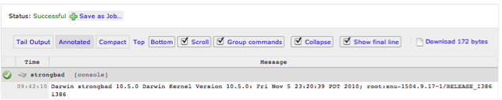
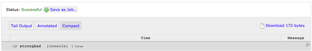

Welcome to the RunDeck user guide. This guide was written to help administrators quickly become productive with the RunDeck server and tools.
RunDeck is open source software that helps you automate ad-hoc and routine procedures in data center or cloud environments. RunDeck provides a number of features that will alleviate time-consuming grunt work and make it easy for you to scale up your scripting efforts.
RunDeck allows you to run tasks on any number of nodes from a web-based or command-line interface. RunDeck also includes other features that make it easy to scale up your scripting efforts including: access control, workflow building, scheduling, logging, and integration with external sources for node and option data.
Already itching to install it? Jump ahead to Installing RunDeck.
RunDeck is developed on GitHub as a project called dtolabs/rundeck. Many ideas for RunDeck come from DTO Solutions consultants working in the field, however all are welcome to join the project and contribute.
RunDeck is free software and is public under the Apache Software License.
man -k rundeckRunDeck is meant to compliment the tools you already use (including frameworks like Puppet, Chef, and Rightscale) and is geared towards helping you automate actions across them. If you currently manage your servers by running commands from the terminal or through scripts that SSH commands in a loop, RunDeck is a more user friendly alternative. Instead of managing node lists in a spreadsheet or wiki page and then having to transcribe the list to where you execute commands, RunDeck acts as a command and control portal that lets you execute commands using features like node filtering and parallel execution.
RunDeck also works well for managing virtual servers, be they from a cloud provider or from locally hosted virtualization software. The node abstraction enabled by the RunDeck command dispatcher helps you cope with managing dynamic environments.
Many automation tasks cross the boundaries of tool sets. For example, deploying software or maintaining an application often involves using tools up and down the management tool chain. RunDeck has a simple to use interface to create multi-step workflows that might call a package mangager, configuration mangement tool, system utilities, or your own scripts. RunDeck is really meant to help glue tools together and in return enable a push button interface you can hand off to others.
RunDeck is a server application you host on a system you designate a central administrative control point. Internally, RunDeck stores job definitions and execution history in a relational database. Output from command and job executions is saved on disk.
RunDeck distributed command execution is performed using SSH. SSH connections are made using key-based authentication. RunDeck server configuration includes settings to define the outbound user allowed by the remote hosts. Remote machines are not required to make SSH connections back to the server.
RunDeck architecture
The RunDeck application itself is a Java-based webapp that runs in its own embedded servlet container. The application provides both graphical interface and network interfaces used by the RunDeck shell tools.
Access to the RunDeck application requires a login and password. The default RunDeck installation uses a flat file user directory containing a set of default logins. Logins are defined in terms of a username and password as well as one or more user groups. An alternative configuration to the flat file user directory, is LDAP (e.g., ActiveDirectory). Users must also be authorized to perform actions like command and job execution. This is controlled by an access control facility that reads policy files defined by the RunDeck administrator. Privilege is granted if a user's group membership meets the requirements of the policy.
Two installation methods are supported:
RPM: The RPM is intended for managed installation and provides robust tools that integrate with your environment, man pages, shell tool set in your path, init.d startup and shutdown
Launcher: The launcher is intended for quick setup, to get you running right away. Perfect for bootstrapping a project or trying a new feature.
If you find problems with RunDeck, or if you have questions, remarks, or ideas about it, please send an email to the RunDeck mailing list, .
The remainder of the guide will give you a quick conceptual overview, and take you through installation and setup. After you are set up, you will learn about the distributed command dispatcher and how to use it to run ad-hoc commands. From there, you will learn about Jobs, defining multi-step procedures with Job workflows and how to parameterize them with options.
This chapter helps new users getting started with RunDeck. We will begin by explaining the basics, covering essential RunDeck concepts and terminology and then move on to installation and finally, setup. At the end of this chapter you should understand what RunDeck is, how you should use it and you should be all setup to do so.
Several fundamental concepts underly and drive the development of the RunDeck system. If you are a new user, knowing about them will help you use and integrate RunDeck into your environment.
RunDeck supports a notion called command dispatching wherein a user specifies dispatch critera along with an action (called a command) and this specification is used to perform a distributed execution.
The command dispatcher is an internal mechanism that looks up node resources meeting specified filtering criteria and then performs the distributed command execution. The command executes in a data context that contains information about the Node resource. Besides node filtering, dispatcher options include parameters to control parallel execution, ordering and error handling.
The command dispatcher supports two methods of command execution:
RunDeck provides both graphical and command line interfaces to interact with the command dispatcher.
The command dispatcher works in conjunction with a resource model. A resource model is a representation of hosts deployed in your network. A Node is a resource that is either a physical or virtual instance of a network accessible host.
Nodes have a number of basic properties but these properties can be extended to include arbitrary named key value pairs.
You can configure RunDeck to retrieve and store resource model data from any source, so long as it meets the RunDeck resource model document requirement.
A resource model provider is an external service accesible via the HTTP GET method that returns data conforming to the RunDeck resource model document format resource-v10(5).
A project is a place to separate management activity. All RunDeck activities occur within the context of a project. Each project has its own resource model and Job store.
Multiple projects can be maintained on the same RunDeck server. Projects are independent from one another, so you can use them to organize unrelated systems within a single RunDeck installation. This can be useful for managing different infrastructures.
Assuming the system requirements are met, RunDeck can be installed either from source, system package or via the launcher.
The following operating systems are known to support RunDeck:
Root (or Administrator on Windows) is not required or recommended. We recommend using a dedicated user account such as "rundeck".
If there is need for root access, please set up the RunDeck user to have access via sudo.
RunDeck is a Java-Servlet based server and therefore requires the Java runtime.
The install process requires that the latest version of Java 1.6 be installed. Both the Open JDK and Sun/Oracle JVMs can be used. You must have the JAVA_HOME environment variable defined in your environment before running the launcher. The RPM will use the java found on your path. See Setting JAVA_HOME if you want to run a different version of java.
Verify your Java version to check it meets the requirement:
$ java -version
java version "1.6.0_22"
Java(TM) SE Runtime Environment (build 1.6.0_22-b04-307-10M3261)
Java HotSpot(TM) 64-Bit Server VM (build 17.1-b03-307, mixed mode)
When the server starts, it binds to several TCP ports:
To check if the ports are free on a Unix host, run:
netstat -an | egrep '4440|4435'
If the ports are in use on the server, you will see output similar to below:
tcp46 0 0 *.4440 *.* LISTEN
tcp46 0 0 *.4435 *.* LISTEN
The installation procedures describe how to choose different ports, if there is a conflict.
In addition, TCP port 22 needs to be open on the clients for SSH.
Cients should be set up to allow the RunDeck server user to connect to the clients using SSH via public-key authentication. It should not prompt for a password. See Configure remote machine for SSH in the Administration chapter.
There are various ways for installing SSH on Windows; we recommend Cygwin.
Checkout the sources from GitHub
Run the build script:
./build.sh
Build clean
./build.sh -clean
The build will generate a launcher jar. On Linux build servers, an RPM will also be generated.
If you want to install RunDeck on Linux via a binary installer, you can generally do so through the RPM tool that comes with your distribution.
# rpm -i rundeck-1.1.0.noarch.rpm
To install it using yum, first install the yum repo package and then run yum install:
# rpm -Uvh http://rundeck.org/latest.rpm
# yum install rundeck
Use the launcher as an alternative to a system package:
Define RDECK_BASE environment variable to the location of the install
export RDECK_BASE=$HOME/rundeck; # or where you like it
Create the directory for the installation.
mkdir -p $RDECK_BASE
Copy the launcher jar to the installation directory.
cp rundeck-launcher-1.1.0.jar $RDECK_BASE
Change directory and run the jar.
cd $RDECK_BASE
java -jar rundeck-launcher-1.1.0.jar
Wait for the Started message.
2010-11-19 13:35:51.127::INFO: Started SocketConnector@0.0.0.0:4440
Update your shell environment
PATH=$PATH:$RDECK_BASE/tools/bin
MANPATH=$MANPATH:$RDECK_BASE/docs/man
If you get an error message that resembles the one below, you probably are using an unupported Java version.
Exception in thread "main" java.lang.UnsupportedClassVersionError: Bad version number in .class file
See the startup and shutdown section for instructions on using the rundeckd shell tool to manage the rundeck launcher process.
RunDeck supports a number of user directory configurations. By default, the installation uses a file based directory, but connectivity to LDAP is also available. See Managing logins in the Administration chapter.
The RunDeck installation process will have defined a set of temporary logins useful during the getting started phase.
user: Has access to run commands and jobs but unable to modify job definitions. Password: "user"admin: Belongs to the "admin" group and is automatically granted the "admin" and "user" role privileges. Password: "admin"If you installed RunDeck using the RPM installation method, it will have created a unix group called "rundeck".
$ groups rundeck
rundeck : rundeck
It also made several log files writable to members of the "rundeck" group.
$ ls -l /var/log/rundeck/command.log
-rw-rw-r-- 1 rundeck rundeck 588 Dec 2 11:24 /var/log/rundeck/command.log
If you want to use the RunDeck shell tools, be sure to add that group to the necessary user accounts.
RunDeck shell tool users that do not belong to group, rundeck, will get error messages like so:
$ rd-jobs
log4j:ERROR setFile(null,true) call failed. java.io.FileNotFoundException: /var/log/rundeck/command.log (Permission denied)
Consult the usermod command to modify a user account.
You should now have a basic understanding of RunDeck. You should also have a working version of RunDeck on your system and login access. It is now time to learn some RunDeck basics.
This chapter covers the basics for using RunDeck. The chapter begins by describing the RunDeck user interfaces, both its graphical and command line. From there it will show you how to set up a project and learn about command execution. You will learn more about using the command dispatcher to control execution and finally, how to find and use history.
RunDeck provides two primary user interfaces:
Both interfaces allow you to view resources, dispatch commands, as well as, store and run jobs.
To get started, go to the URL for your RunDeck server. Login to the web app with the credentials defined by the RunDeck user directory configuration.
The "Now running" section appears at the top of the Run and Jobs pages and provides a view into the execution queue. Any currently executing ad hoc command or Job will be listed and include information like the name of the job, when it started, who ran it, and a link to the execution output.
Now running
Jobs that have been run before also have a progress bar approximating duration.
RunDeck includes a number of shell tools to dispatch commands, load and run Job definitions and interact with the dispatcher queue. These command tools are an alternative to functions accessible in the graphical console.
Consult the online manual pages for options and usage information.
A RunDeck Project provides a space to manage related management activities.
A Project can be set up either from the graphical console or using the rd-project shell tool.
After logging into the graphical console, you will notice a Project menu in the top navigation bar. If no projects exist, you will be prompted to create a new project.
Create project prompt
After entering your project name, RunDeck initializes it and returns you to the "Run" page.
Projects can be created at any time by going back to the Project menu and selecting the "Create a new project..." item.
Create project menu
The rd-project shell tool can also be used to create a project.
On the RunDeck server, execute the rd-project command and specify a project name, here we use "examples":
rd-project -a create -p examples
After running this command, you can login into the graphical console and see the new project in the project menu.
The project setup process generates Project configuration in the server, and a bootstrap resource model.
Run page after new project
One node will be listed, the RunDeck server host. The server host is distinguished with the word "server" in red text.
The initial resource model generated during project setup will contain information just about the RunDeck server host and is useful just for running local commands on the RunDeck server. You can browse the project resource model by going to the "Run" page.
In the shell, you can list the Node resources in a resource model using the shell tool, dispatch. Specify project name using the -p project option.
Here the dispatch command lists the registered server for the "examples" project after the project setup. The -v gives a verbose listing that includes more detail:
$ dispatch -p examples -v
strongbad:
hostname: strongbad
osArch: x86_64
osFamily: unix
osName: Mac OS X
osVersion: 10.6.2
tags: ''
---- Attributes ----
Node resources have standard properties, such as "hostname" but these can be extended via attributes. One of the more useful properties is the "tags" property. A tag is a text label that you give to the Node, perhaps denoting a classification, a role the node plays in the environment, or group membership. Multiple tags can be defined for a given node.
The output above shows the "strongbad" node currently has an empty tags property: tags: ''.
It is important to start thinking about node tagging for the nodes you manage because you will use them later when specifying filtering options to drive distributed command dispatch.
Each Project has a configuration file called project.properties, located at this path: $RDECK_BASE/projects/project/etc/project.properties.
This configuration file contains two important properties for accessing and storing resource model data:
project.resources.file: File path to store resource model data (required).project.resources.url: URL to an external resource model provider (optional)You can configure RunDeck to retrieve and store resource model data from any source, so long as it meets the RunDeck resource model document requirement. Set the project.resource.url to the resource model provider of your choice.
RunDeck reads the XML document retrieved from the ${project.resources.url} site and stores it in the path defined by ${project.resources.file}.
Here's the XML document stored for the "examples" project that corresponds to the output printed by the dispatch -v shown earlier:
<project>
<node name="strongbad" type="Node"
description="the RunDeck server host" tags=""
hostname="strongbad"
osArch="x86_64" osFamily="unix" osName="Mac OS X" osVersion="10.6.2"
username="alexh"
editUrl="" remoteUrl=""/>
</project>
You'll notice the root node is called project and there is a single node descriptor for "strongbad". The node tag has a number of required and optional attributes. Additional node descriptors can be added by defining new node elements inside the project tag.
The strongbad host does not have any tags defined for it. One or more tags can be defined. Use comma for the delimiter (e.g, tags="tag1,tag2").
Here's an example of a node called "homestar" with just the required attributes:
<node name="homestar" type="Node"
hostname="192.168.1.02"
username="alexh" />
The hostname and username values are used for the SSH connection while the name and type are used to define Node identity in the resource model. It is possible to overload the hostname value to include port information (eg, hostname="somehost:2022"). This is useful if your run SSH on a different port.
Chances are you maintain information about your hosts within another tool, perhaps Chef, Puppet, Nagios, Amazon EC2, RightScale or even an in-house database. One of these tools might be considered the authority of knowledge about the nodes deployed in your network. Therefore, it is best to create an interface to the authorative tool and expose it as RunDeck resource model provider. This can be done as a simple CGI script that does a transformation from the tool's format to the one RunDeck understands.
Of course, a rudimentary alternative is to maintain this information as an XML document, storing it in a source repository that is periodically exported to Rundeck. This method could be practical if your host infrastructure infrequently changes.
The resource-v10(5) manual contains reference information about the RunDeck resources document content and structure.
Check the RunDeck web site for resource model providers. If you are interested in creating your own, see the Resource model provider section in the Integration with External Data Providers chapter.
RunDeck supports two modes of execution: ad-hoc commands and Job.
An ad-hoc command is any system command or shell script executed via the command dispatcher. Ad hoc commands can be executed via a command line utility named dispatch or run from the graphical console.
A Job specifies a sequence of one or more command invocations that can be run once (i.e, is temporary) or named and stored for later use. Stored jobs can be started via the shell tool, run, and their progress checked with rd-queue.
Dispatcher execution can be controlled by various types of options.
Command execution can be controlled in various ways. Concurrency is controlled through threadcount. Execution can continue if specified to keepgoing
Filtering options specify include and exclude patterns to determine which nodes from the project resource model to distribute commands.
Keywords are used within they include and exclude patterns. The "tags" keywords additionally can use a boolean operator to combine logical ORs and ANDs.
All keywords can be combined by specifying the include and exclude options multiple times on the command line.
One can experiment querying the resource model in the graphical console or with the dispatch tool.
A project's Node resources are displayed in the Run page. Use the project menu in the navigation bar to change to the desired project. After choosing a project, the server node will be filtered by default.
Nodes can be filtered using include and exclude patterns by using the Filter form. The form can be opened by pressing the "Filter" button. Press the triangular disclosure icon to display the form.
Resource filter link
When the form opens, you will see it divided into an Include section where simple include expressions can be set, as well as, an "Extended Filters..." link where exclude expressions can be made.
Resource filter form
After filling out the filter form, press "Filter" to generate a new listing. Pressing "Clear" resets the form.
The Include and Exclude filters allow for filtering nodes based on the following keywords: Name, Tags, Hostname, OS Name, OS Family, OS Architecture, OS Version and Type.
Regular expressions can be used for any of the keywords. The .* pattern will match any text.
If more than 20 nodes match the filter, the UI will page the results.
dispatch uses the commandline options -I (include) and -X (exclude) to specify which nodes to include and exclude from the base set of nodes. You can specify a single value, a list of values, or a regular expression as the argument to these options.
Examples
List nodes with OS name, Linux:
dispatch -p examples -I os-name=Linux
List Linux nodes but exclude ones with names prefixed "web.":
dispatch -p examples -I os-name=Linux -X "web.*"
List nodes that are tagged both "web" and "prod" :
dispatch -p examples -I tags=web+prod
Here's an example that will execute the apachectl restart command in 10 threads across all nodes tagged "web" and keepgoing in case an error occurs :
dispatch -p examples -I tags=web -K -C 10 -- sudo apachectl restart
Consult the rd-options(1) manual page for the complete reference on available dispatcher options.
Typically, an ad-hoc command is a shell script or system executable that you run at an interactive terminal. Ad-hoc commands can be executed via the dispatch shell command or a graphical shell.
Use dispatch to execute individual commands or shell script files.
Here dispatch is used to run the Unix uptime command to print system status:
$ dispatch -I os-family=unix -- uptime
Succeeded queueing Workflow execution: Workflow:(threadcount:1){ [command( exec: uptime)] }
Queued job ID: 7 <http://strongbad:4440/execution/follow/7>
The uptime command is queued and executed. The output can be followed by going to the URL returned in the output (eg, http://strongbad:4440/execution/follow/7).
Sometimes it is desirable to execute the command directly, and not queue it 1. Use the --noqueue option to execute and follow the output from the console.
$ dispatch -I os-family=unix --noqueue -- uptime
[ctier@centos54 dispatch][INFO] 10:34:54 up 46 min, 2 users, load average: 0.00, 0.00, 0.00
[alexh@strongbad dispatch][INFO] 10:34 up 2 days, 18:51, 2 users, load averages: 0.55 0.80 0.75
[examples@ubuntu dispatch][INFO] 10:35:01 up 2 days, 18:40, 2 users, load average: 0.00, 0.01, 0.00
Notice, the dispatch command prepends the message output with a header that helps understand from where the output originates. The header format includes the login and node where the dispatch execution occurred.
Execute the Unix whomi command to see what user ID is used by that Node to run dispatched commands:
$ dispatch -I os-family=unix --noqueue -- whoami
[ctier@centos54 dispatch][INFO] ctier
[alexh@strongbad dispatch][INFO] alexh
[examples@ubuntu dispatch][INFO] examples
You can see that the resource model defines each Node to use a different login to execute dispatch commands. That feature can be handy when Nodes serve different roles and therefore, use different logins to manage processes. See the username attribute in resource-v10(5) manual page.
The dispatch command can also execute shell scripts. Here's a trivial script that generates a bit of system info:
#!/bin/sh
echo "info script"
echo uptime=`uptime`
echo whoami=`whoami`
echo uname=`uname -a`
Use the -s option to specify the "info.sh" script file:
$ dispatch -I os-family=unix -s info.sh
The dispatch command copies the "info.sh" script located on the server to each "unix" Node and then executes it.
The RunDeck graphical console also provides the ability to execute ad-hoc commands to a set of filtered Node resources. The command prompt can accept any ad-hoc command string you might run via an SSH command or via the dispatch shell tool.
But before running any commands, you need to select the project containing the Nodes you wish to dispatch. Use the project menu to select the desired project name. After the project has been selected you will see a long horizontal textfield labeled "Command". This is the RunDeck ad hoc command prompt.
Ad hoc command prompt
To use the command prompt, type the desired ad-hoc command string into the textfield and press the "Run" button. The command will be dispatched to all the Node resources currently listed below the command prompt tool bar. The command prompt also becomes disabled until the execution completes. Output from the command execution will be shown below (see output).
Ad hoc execution output
You will also notice the ad hoc execution listed in the "Now running" part of the page, located above the command prompt. All running executions are listed there. Each running execution is listed, showing the start time, the user running it, and a link to follow execution output on a separate page.
Now running ad hoc command
At the bottom of the page, you will see a "History" section containing all executions in the selected project for the last 24 hours. After the execution completes, a new event will be added to the history. A yellow highlight indicates when the command leaves the Now running section and enters the history table.
Run history
History is organized in summary form using a table layout. The "Summary" column shows the command or script executed. The "Node Failure Count" contains the number of nodes where an error in execution occurred. If no errors occurred, "ok" will be displayed. The "User" and "Time" columns show the user that executed the command and when.
Ad hoc command execution output is displayed below the command prompt.
This page section provides several views to read the output using different formats.
Displays output messages from the command execution as if you were running the Unix tail -f command on the output log file. By default, only the last 20 lines of output is displayed but this can be expanded or reduced by pressing the "-" or "+" buttons. You can also type in an exact number into the textfield.
The annotated mode displays the output messages in the order they are received but labels the each line with the Node from which the message originated. Through its additional controls each Node context can be expanded to show the output it produced, or completely collapsed to hide the textual detail.

Output messages are sorted into Node specific sections and are not interlaced. By default, the messages are collapsed but can be revealed by pressing the disclosure icon to the right. 
Sometimes it is useful to have a page where just the execution output is displayed separately. One purpose is to share a link to others interested in following the output messages. Click the "output >>" link in the "Now running" section to go to the execution follow page.
Also, notice the URL in the location bar of your browser. This URL can be shared to others interested in the progress of execution. The URL contains the execution ID (EID) and has a form like:
http://rundeckserver/execution/follow/{EID}
After execution completes, the command will have a status:
You can download the entire output as a text file from this page. Press the "Download" link to retrieve the file to your desk top.
Parallel execution is managed using thread count via "-C" option. The "-C" option specifies the number of execution threads. Here's an example that runs the uptime command across the Linux hosts with two threads:
dispatch -I os-name=Linux -C 2 -- uptime
The keepgoing and retry flags control when to exit incase an error occurs. Use "-K/-R" flags. Here's an example script that checks if the host has port 4440 in the listening state. If it does not, it will exit with code 1.
#!/bin/sh
netstat -an | grep 4440 | grep -q LISTEN
if [ "$?" != 0 ]; then
echo "not listening on 4440"
exit 1;
fi
echo listening port=4440, host=`hostname`;
Commands or scripts that exit with a non-zero exit code will cause the dispatch to fail unless the keepgoing flag is set.
$ dispatch -I os-family=unix -s /tmp/listening.sh --noqueue
[alexh@strongbad dispatch][INFO] Connecting to centos54:22
[alexh@strongbad dispatch][INFO] done.
[ctier@centos54 dispatch][INFO] not listening on 4440
error: Remote command failed with exit status 1
The script failed on centos54 and caused dispatch to error out immediately.
Running the command again, but this time with the "-K" keepgoing flag will cause dispatch to continue and print on which nodes the script failed:
$ dispatch --noqueue -K -I tags=web -s /tmp/listening.sh
[alexh@strongbad dispatch][INFO] Connecting to centos54:22
[alexh@strongbad dispatch][INFO] done.
[ctier@centos54 dispatch][INFO] not listening on 4440
[ctier@centos54 dispatch][ERROR] Failed execution for node: centos54: Remote command failed with exit status 1
[alexh@strongbad dispatch][INFO] listening port=4440, host=strongbad
[alexh@strongbad dispatch][INFO] Connecting to 172.16.167.211:22
[alexh@strongbad dispatch][INFO] done.
[examples@ubuntu dispatch][INFO] not listening on 4440
[examples@ubuntu dispatch][ERROR] Failed execution for node: ubuntu: Remote command failed with exit status 1
error: Execution failed on the following 2 nodes: [centos54, ubuntu]
error: Execute this command to retry on the failed nodes:
dispatch -K -s /tmp/listening.sh -p examples -I
name=centos54,ubuntu
By default, commands or scripts executed on the command line by dispatch are queued as temporary jobs in RunDeck. The dispatch command is equivalent to a "Run and Forget" action in the graphical console.
The script below is a long running check that will conduct a check periodically waiting a set time between each pass. The script can be run with or without arguments as the parameters are defaulted inside the script:
$ cat ~/bin/checkagain.sh
#!/bin/bash
iterations=$1 secs=$2 port=$3
echo "port ${port:=4440} will be checked ${iterations:=30} times waiting ${secs:=5}s between each iteration"
i=0
while [ $i -lt ${iterations} ]; do
echo "iteration: #${i}"
netstat -an | grep $port | grep LISTEN && exit 0
echo ----
sleep ${secs}
i=$(($i+1))
done
echo "Not listening on $port after $i checks" ; exit 1
Running dispatch causes the execution to queue in RunDeck and controlled as temporary Job. The -I centos54 limits execution to just the "centos54" node:
$ dispatch -I centos54 -s ~/bin/checkagain.sh
Succeeded queueing workflow: Workflow:(threadcount:1){ [command( scriptfile: /Users/alexh/bin/checkagain.sh)] }
Queued job ID: 5 <http://strongbad:4440/execution/follow/4>
To pass arguments to the script pass them after the "--" (double dash):
$ iters=5 secs=60 port=4440
$ dispatch -I centos54 -s ~/bin/checkagain.sh -- $iters $secs $ports
Queued ad-hoc command and temporary or saved Job executions can be tracked from the "Run" page in the "Now Running" area at the top of the page.
Execution can also be tracked using the rd-queue shell tool.
$ rd-queue
Queue: 1 items
[5] workflow: Workflow:(threadcount:1){[command( scriptfile: /Users/alexh/bin/checkagain.sh)]} <http://strongbad:4440/execution/follow/5>
Each job in the execution queue has an execution ID. The example above shows one item with the ID, 5.
Running jobs can also be killed via rd-queue kill. Specify execution ID using the "-e" option:
$ rd-queue kill -e 5
rd-queue kill: success. [5] Job status: killed
History for queued ad-hoc commands, as well as, temporary and saved Job executions is stored by the RunDeck server. History data can be filtered and viewed inside the "History" page.
History page
By default, the History page will list history for the last day's executions. The page contains a filter control that can be used to expand or limit the executions.
The filter form contains a number of fields to limit search:
History filter form
After filling the form pressing the "Filter" button, the page will display events matching the search.
Filters can be saved to a menu that makes repeating searches more convenient. Click the "save this filter..." link to save the filter configuration.
History for each execution contains the command(s) executed, dispatcher options, success status and a link to a file containing all the output messages.
Event view
If any errors occurred, the "Node Failure Count" column will show the number of nodes in red text. A bar chart indicates the percent failed.
Event view
An RSS icon provides a link to an RSS view of the events that match the current filtering critera.
RSS link
Each of the filter controls provides the means to save the current filter configuration. Press the "save this filter..." link to give it a name. Each saved filter is added to a menu you can access the next time you want that filter configuration.
If you use the Bash shell, RunDeck comes with a nice auto-completion script you can enable. Add this to your .bashrc file:
source $RDECK_BASE/etc/bash_completion.bash
Press the Tab key when you're writing a dispatch command, and it should return a set of suggestions for you to pick from:
$ dispatch <tab><tab>
At this point, you can do basic RunDeck operations - setup a project, define and query the project resource model, execute ad-hoc commands, run and save Jobs and view history.
Next, we'll cover one of RunDeck's core features: Jobs.
In previous sections of this manual, you learned how to execute ad-hoc commands across a filtered set of Node resources. This chapter introduces a fundamental RunDeck feature, Jobs. But first, one might ask why introduce another layer over ad-hoc command execution.
Here are some issues that might arise over time:
Jobs provide a means to encapsulate a procedure in a logically named Job. A Job is a configuration representing the steps in a procedure, a Node filter specification, and dispatcher execution control parameters. Jobs access is governed by an access control policy that describes how users are granted authorization to use Jobs.
RunDeck lets you organize and execute Jobs, and observe the output as the Job is running. You can view a list of the currently running Jobs that is dynamically updated as the Jobs progress. Jobs can also be killed if they need to be stopped.
Each Job has a record of every time it has been executed, and the output from those executions can be viewed.
The next sections describes how to navigate and run existing Jobs. In later sections, the topic of Job creation will be covered.
If you want to skip ahead, you can go straight to Creating Jobs.
As many jobs will accumulate over time, it is useful to organize Jobs into groups. A group is a logical set of jobs, and one job group can exist inside another. RunDeck displays job lists as a set of folders corresponding to the group structure your jobs define.
Beyond organizing jobs, groups assist in defining access control policy, as we'll cover later in the Authorization chapter.
All Job activity begins on the main "Jobs" page inside RunDeck. After logging in, press the "Jobs" button in the top navigation bar and any Jobs you are authorized to see will be displayed.
If the Jobs were defined inside groups, you will see the listing grouped into a folder like structure. These folders represent the Job groups described earlier. You can navigate these folders by pressing the folder icon to reveal its contents.
Once you have navigated to a Job, you will see its name, possibly its description and a summary total of how many times it has been executed.
Clicking on the job name will will expand the window to show the Job detail. You will see a button bar containing icons representing the actions you are able to perform. Other Job detail will include what command(s) it will run, filter expressions and other dispatcher options.
The Job page lets you search for Jobs using the Filter option.
Click the "Filter" link to show the filter options:
Job filter form
This will show the Filter fields. Enter a value in any of the filter fields:
You can type a substring or a regular expression in any of these fields.
After pressing the "Filter" button, the Job list will be filtered to include only the matching jobs.
Job filtered list
To refine the filter, click on the blue-outlined Filter description, and change the filter fields.
To reset the filter and go back to the full job page, click the "Clear" button in the Filter fields.
From a filtered job listing, a Job's detail can be previewed by hovering the mouse pointer over the Job's name. A popup view contains the Job's detail. Click outside the popup to close it.
Job detail popup
Pressing the link for the Job name will navigate to a separate page where job detail and a button control bar is displayed. These buttons enable users to delete, copy, edit export or run the Job.
Job detail page
The buttons displayed on the control bar reflect the authorization policy enforced for the user.
The information in the Job detail view includes:
Pressing the "Show Matches" link will display the list of Nodes where the Job will run.
Jobs can be run from the shell or from the graphical console.
From the command line, use the run shell tool. Here's an example that starts a hypothetical job named "restart" belonging in the "apps/web" Job group:
$ run -j apps/web/restart
Job execution started:
[51] restart <http://strongbad:4440/execution/follow/51>
From the graphical console, any stored job can be started from the Jobs page. Navigate to the desired Job from the filtered listing and then press the green "Run" icon to immediatly queue and run the Job. If you do not see the Run icon, it means your login does not have "run" privileges.
Job run button
If you navigated to the Job's detail page, you press the "Run" button from there.
Job run button
After the Run button has been pressed, a dialog will open where you can choose execution options.
Jobs can be defined to prompt the user for options. This page contains a form presenting any of these Job options.
Some options will have default values while others may present you with a menu of choices. Some options are optional while others are required. Lastly, their might be a pattern govering what values are acceptable.
If there are any such Job options, you can change them here before proceeding with the execution.
When you are ready, press "Run Job Now". The job will enter the execution queue and you can track its execution in the Now running section.
Once you have started running a Job, you can follow the Job's output in the Execution Follow page.
On the Jobs page, look in the "Now running" section and click the "output >>" link in the row with the desired Job name.
If you pressed the "run" button from the Job's detail page, your browser will already have been directed to the Execution Follow page.
RunDeck allows you to define two kinds of Jobs.
From the Jobs, page press the "New Job" button to begin creating a Job.
New Job button
A temporary job is a bit like an ad-hoc command except you get more control over how the commands will execute plus the execution can be better tracked within the RunDeck webapp.
To create a temporary job, begin by logging in to the RunDeck graphical console, and press the "Jobs" tab.
Temporary job form
Running ad hoc commands and temporary jobs are a typical part of day to day administrative work. Occasionally, ad-hoc commands become routine procedures and if were reusable, would become more valuable. These jobs could be handed off to others in the team or invoked from within other Jobs. RunDeck provides an interface to declare and save jobs, both graphically or declared with an XML file.
For the first saved Job example, create a Job that calls the info script.
Saved jobs can be configured to run on a periodic basis. If you want to create a Scheduled Job, select Yes under "Schedule to run repeatedly?"
Scheduled job simple form
The schedule can be defined in a simple graphical chooser or Unix crontab format.
To use the simple chooser, choose an hour and minute. You can then choose "Every Day" (default), or uncheck that option and select individual days of the week. You can select "Every Month" (default) or unselect that option and choose specific months of the year:
If the crontab time and date format is preferred, enter a cron expression.
Scheduled job crontab form
Use the crontab syntax referenced here: CronExpression
After the Job has been updated to include a schedule, a clock icon will be displayed when the Job is listed:
Scheduled job icon
In the Jobs page, you can see the outcome of previous executions of Jobs by clicking the "Executions" link for the Job.
Job executions link
This returns a filtered history peraining to that Job. You can click on any past execution in the list to see the full execution state.
Job executions matches
From the Job detail page, one can also see previous execution history.
Jobs that are currently running can be Killed immediately.
WARNING: This feature should be used with caution, as it forcibly kills the Java Thread that the Job is running on. It may result in the RunDeck server becoming flaky. It is a deprecated feature of Java that is not recommended to be used, so do so only when extremely necessary.
From the History view Now Running section, or in the Job execution follow page, click on the "Kill Job Now" button for the running Job.
When prompted "Really kill this job?" Click the "Yes" button.
The Job will terminate with a "Killed" completion status.
See also: rd-queue.
In the Job detail page, click the red "X" icon for to delete the Job.
Job delete button
Click "Yes" when it says "Really delete this Job?"
All of the data you set when creating a job can be modified. To edit a Job, you can click the Pencil icon:
Job edit button
Similarly, to Copy a Job definition to a new Job, press the Copy button.
Job copy button
Job definitions created inside the RunDeck graphical console can be exported to an XML file format and be used for later import.
Two methods exist to retrieve the XML definition one inside RunDeck's graphical interface and the other using the rd-jobs shell tool.
In the Job detail page, locate the icon with an XML symbol in the toolbar. It is labeled "Download XML" in the mouse tool tip.
Job export button
Press this button to initiate the file download to your browser. Depending on your browser, it will be stored in your downloads directory.
If you prefer the command line open a shell on the RunDeck server. Run the rd-jobs command to write it to disk. By default, rd-jobs will dump all Job definitions to one file. To limit it to just a single Job specify its name:
rd-jobs -n "job-name" -f job.xml
This will store the results in the "job.xml" file job-v20(5).
Consult the rd-jobs(1) manual page for additional command usage.
If you have a "job.xml" file (See above) and want to upload it via the GUI web interface, you can do so.
Click on the New Job" button in the Job list.
In the "Create New Job" form, click on the button that says "Uplaod Definition..." on the right side:
Job import button
Click the Choose File button and choose your job.xml file to upload.
Job import form
Choose an option where it says "When a job with the same name already exists:":
Click the Upload button. If there are any errors with the Job definitions in the XML file, they will show up on the page.
After reading this chapter, you should be familiar with RunDeck Jobs and able to find and run them. You should understand how to create temporary and saved jobs and understand how to find thier history. Finally, you should be aware of how to export and import Job definitions as XML documents.
Next, we'll cover how to create multi-step procedures using Job Workflows.
The Job's most basic feature is its ability to execute one or more commands across a set of nodes. This sequence of commands is called a workflow, and each step in the workflow is defined as an invocation to a command.
The steps of the Job workflow are displayed when viewing a Job's detail from a Job listing or within the Job editor form.
Workflows can be defined within the RunDeck graphical console or as an XML document that is loaded to the server.
The graphical console provides an authoring environment where steps can be added, edited, removed or reordered.
Users prefering to define Jobs in XML should read the job-v20(5) manual page.
It is also possible to author Jobs inside the graphical console and then export the definiton as an XML file using the rd-jobs shell tool (rd-jobs(1)).
Workflow execution is controlled by two important settings: Keepgoing and Strategy.
Workflow controls
Keepgoing: This manages what to do if a step incurs and error:
The default is to fail immediately but depending on the procedure at hand you can choose to have the execution continue.
Strategy: Controls the order of execution of steps and command dispatch to nodes: Node-oriented and Step-oriented.
The following illustrations contrast the strategies showing how three steps proceed across two nodes.
Node-oriented flow illustrated:
1. NodeA step#1
2. " step#2
3. " step#3
4. NodeB step#1
5. " step#2
6. " step#3
Step-oriented flow illustrated:
1. NodeA step#1
2. NodeB "
3. NodeA step#2
4. NodeB "
5. NodeA step#1
6. NodeB "
The process you are automating will determine which strategy is correct, though the node-oriented flow is more commonplace.
The following sections describe how to construct a workflow as a set of steps that call commands of different types.
When creating a new Job definition, the Workflow form will be set with defaults and have no workflow steps defined. The workflow editor will have a form open asking to enter a shell command as the first step.
Add a step
To add new steps simply press the "Add a step" link inside the workflow editor form. This will prompt you with a dialog asking which kind of workflow step you would like to add. Each kind of step has its own form. When you are done filling out the form, press "Save" to add it to the sequence. Pressing "Cancel" will close the form and leave the sequence unchanged.
Workflow step types
New steps are always added to the end of the sequence. See Reordering steps for directions on modifying the step order.
The next several sections describe the specification of each kind of command step.
Use the command step to call system commands. This is the default type of workflow step when creating a Job. Enter any command string you would type at the terminal on the remote hosts.
Command step type
This is similar to calling the command with dispatch:
dispatch [filter-options] -- command
Execute the supplied shell script content. Optionally, can pass an argument to the script specified in the lower text field.
Script step type
This is similar to calling the command with dispatch:
dispatch [filter-options] --stdin -- args <<EOF
script content here
EOF
Executes the script file local to the sever to the filtered Node set. Arguments can be passed to the script by specifying them in the lower text field.
Script file step type
This is similar to calling the script file with dispatch:
dispatch [filter-options] -s scriptfile -- args
To call another saved Job, create a Job Reference step. Enter the name of the Job and its group.
Job step type
The Job Reference form provides a Job browser to make it easier to select from the existing set of saved Jobs. Click the "Choose A Job..." link and navigate to the desired Job.
Finally, if the Job defines Options, you can specify them in the commandline arguments text field.
This is simililar to calling the other Job with run:
run [filter-options] -j group/jobname
The order of the Workflow steps can be modified by hovering over any step and then clicking and dragging the double arrow icon to the desired position. A blue horizontal bar helps highlight the position where the Job will land.
Job step reorder
After releasing the select Job, it will land in the desired position and the step order will be updated.
If you wish to Undo the step reordering, press the "Undo" link above the steps.
The "Redo" button can be pressed to reapply the last undone change.
Press the "Revert All Changes" button to go back to the original step order.
Once the Workflow steps have been defined and order, changes are permanently saved after pressing the "Create" button if new or the "Update" button if the Job is being modified.
At this point you should understand what a Job workflow is, the kinds of steps they can contain and how to define a workflow.
Next, we'll cover more about RunDeck's Job Option features.
Any command or script can be wrapped as a Job. Creating a Job for every use case will proliferate a large number of Jobs differing only by how the Job calls the scripts. These differences are often environment or application version related. Other times only the person running the Job can provide the needed information to run the Job correctly.
Making your scripts and commands data driven, will also make them more generic and therefore, resuable in different contexts. Rather than maintain variations of the same basic process, letting Jobs be driven by a model of options from externally provided data will lead to better abstraction and encapsulation of your process.
RunDeck Jobs can be configured to prompt a user for input by defining one or more named options. An option models a named parameter that can be required or optional and include a range of choices that will be presented to the user when the Job is run.
Users supply options by typing in a value or selecting from a menu of choices. A validation pattern ensures input complies to the option requirement. Once chosen, the value chosen for the option is accessible to the commands called by the Job.
Option choices can be modeled as a static set or from a dynamic source. Static choices can be modeled as a comma separated list in the job definition. When option values must be dynamic, the Job can be defined to use a URL to retrieve option data from an external source. Enabling Jobs to access external sources via URL opens the door to integrating RunDeck with other tools and incorporating their data into Job workflows.
The obvious effect from defining Job options is their appearance to the user running the Job. Users will be presented a page called "Choose Execution Options..." where input and menu choices must be configured.
Command line users executing Jobs via the run shell tool also will specify options as an argument string.
It is worth spending a moment to consider how options become part of the user interface to Jobs and give some thought to this next level of procedure formalization.
Options can be created for any stored Job. The Job edit page contains an area displaying a summary to existing options and a link to add new ones or edit existing ones.
Add option link
The option summary shows each option and its default value if it defines them.
Clicking the "edit" link opens the options editor.
Option editor
The options editor displays an expanded summary for each defined option. Each option is listed with its usage summary, description, values list and any restrictions. Pressing the "Add an option" link will open a form to define a new parameter. Pressing the "Close" link will collapse the options editor and return back to the summary view.
Moving the mouse over any row in the options editor reveals links to delete or edit the highlighted option. Pressing the remove icon will display a prompt confirming you want to delete that option from the Job. Clicking the "edit" link opens a new form that lets you modify all aspects of that option.
Options can also be defined as part of an XML job definition and later loaded to the RunDeck server. See job-v20(5) and rd-jobs(1) manual pages if you prefer using an XML Job definition.
New options can be defined by pressing the "Add an option" link while existing ones can be changed by pressing their "edit" link.
Option edit form
The option definition form is organized into several areas:
Here you provide the option's name and description. The name becomes part of acceptable arguments to the Job while the description will be provided as help text to users running the Job.
The Default Value will be pre-selected in the GUI when the option is presented.
Allowed values provide a model of possible choices. This can contain a static list of values or a URL to a server providing option data. Values can be specified as a comma separated list as seen above but can also be requested from an external source using a "remote URL" See below.
Defines criteria on which input to accept or present. Option choices can be controlled using the "Enforced from values" restriction. When set "true", RunDeck will only present a popup menu. If set "false", a text field will also be presented. Enter a regular expression in the "Match Regular Expression" field the Job will evaluate when run.
Indicates if the Job can only run if a choice is provided for that Option. Choosing "No" states the option is not required Choose "Yes" to state the option is required.
If a Default Value is set for the option, then this value will automatically be set for the option if it is Required, even if not specified among the arguments when executing a job via the command-line or API.
Defines if the user input can consist of multiple values. Choosing "No" states that only a single value can chosen as input. Choosing "Yes" states that the user may select multiple input values from the Allowed values and/or enter multiple values of their own. The delimiter string will be used to separate the multiple values when the Job is run.
Once satisfied with the option definition, press the "Save" button to add it to the Job definition. Pressing the "Cancel" button will dismiss the changes and close the form.
A model of option values can be retrieved from an external source. When the valuesUrl is specified for an Option, then the model of allowed values is retrieved from the specified URL.
This is useful in a couple of scenarios when RunDeck is used to coordinate process that depend on other systems:
Option values can be passed to scripts as an argument or referenced inside the script via a named token. Option values can be accessed in one of several ways:
Bash: $RD_OPTION_NAME 2
Commandline Arguments: ${option.name}
Script Content: @option.name@
A single example helps illustrate these methods. Imagine a trivial script is wrapped in a Job named "hello" and has an option named "message".
The "hello" Job option signature would be: -message <>.
Option usage
Here's the content of this simple script.
#!/bin/sh
echo envvar=$RD_OPTION_MESSAGE ;# read from environment
echo args=$1 ;# comes from argument vector
echo message=@option.message@ ;# replacement token
When the user runs the "hello" job they will be prompted for the "message" value.
Option entered
Let's assume they entered the word "howdy" in response. The output of the Job will be:
envar=howdy
args=howdy
message=howdy
It's important to know what happens if the option isn't set. This can happen if you define an option that is not required and do not give it a default value.
Let's imagine the Job was run without a message option supplied, the output would look like this:
envar=
args=
message=@option.message@
Here are some tips to deal with this possibility:
As a precaution you might test existence for the variable and perhaps set a default value. To test its existence you might use:
test -s $RD_OPTION_NAME
You might also use a Bash feature that tests and defaults it to a value:
${RD_OPTION_NAME:=mydefault}
message=@option.message@
if [ "$message" == "@option.message@" ] ; then
message=mydefault
fi
Jobs can be invoked from the command line using the run shell tool or as a step in another Job's workflow.
Using the run command pass them after the double hyphen:
run -j jobId -- -paramA valA -paramB valB
Inside an XML definition, insert them as an arg element:
<command>
<jobref group="test" name="other tests">
<arg line="-paramA valA -paramB valB"/>
</jobref>
</command>
Consult the run(1) and job-v20(5) manual pages for additional information.
After reading this chapter you should understand how to run Jobs with options, as well as, add and edit them. If you are interested in generating option data for one of your jobs, see the option model provider section in the Examples chapter.
This chapter presents working examples reflecting a variety of solutions you can create with RunDeck. Helping you apply concepts and features introduced in earlier chapters is the focus of these examples. Rather than make the examples abstract, they are set in the context of Acme Anvils, a fictious organization that manages an online application.
Acme Anvils is a hypothetical start up selling new and used anvils from their web site. Two teams inside the company are involved with the development and support of the anvil sales application. Being a new company, there isn't much control over access to the live environment. Either team can make changes to systems which has led to mistakes and outages. Because the senior management is so enthusiastic, they push the teams to deliver new features as frequently as possible. Unfortunately, this has led to another problem: the Acme Anvil web site is an unstable memory hog and requires occassional restarts.
There are actually two methods to the restart procedure depending on the problem: "kill" versus "normal". The "kill" restart is required when the application becomes totally unresponsive. The "normal" restart occurs when the application needs to free memory.
Depending on the urgency or the staff on hand, either a developer or an administrator conducts the restart, albeit differently. Because the developers write the software, they understand the restart requirements from an application perspective. The administrators on the other hand, are not always informed of these requirements but are well versed in restarting the application from a systems perspective. This has led to a divergence in procedures and has become the main source of problems that affect their customers.
An administrator, tired of the late night calls to restart the application, and frustrated by the knowledge gap between operations and development has decided to take the initiative come up with a better approach.
The administrator chooses a machine with access to the servers in the live environment and installs the RunDeck software there.
A project called "anvils" is created to manage the application support activites .
The administrator creates the project using the rd-project shell tool though this could be done with the RunDeck GUI (see (project setup). After logging into the RunDeck server, the command is run:
rd-project -p anvils -a create
This initialized the "anvils" project in RunDeck so it only contains information about the server node. Adding information about the nodes deployed in the live environment is the next step (see resource model).
The environment has five nodes: anv1-anv5. Anvils is a three tier application and has web, application and database components installed across the five nodes.
Additionally, the administrator decides to incorporate a recent convention to use different system logins to execute SSH commands to control running application components. The web component are run as the "www" user while the app and database components run as user "anvils".
With this information in hand, the administrator prepares the project resource model using the resource-v10 document format. The file listing below contains the node definitions for the five nodes -- anv1, anv2, anv3, anv4, anv5:
File listing: resources.xml
<?xml version="1.0" encoding="UTF-8"?>
<project>
<node name="anv1" type="Node"
description="an anvils web server"
hostname="anv1.acme.com" username="www" tags="web"/>
<node name="anv2" type="Node"
description="an anvils web server"
hostname="anv2.acme.com" username="www" tags="web"/>
<node name="anv3" type="Node"
description="an avnils app server"
hostname="anv3.acme.com" username="anvils" tags="app"/>
<node name="anv4" type="Node"
description="an anvils app server"
hostname="anv4.acme.com" username="anvils" tags="app"/>
<node name="anv5" type="Node"
description="the anvils database server"
hostname="anv5.acme.com" username="anvils" tags="db"/>
</project>
Reviewing the XML content one sees the XML tag set represent the host information described above. A logical name for each node is defined with the name attribute (eg name="anv1"). The address used by SSH is set with hostname (eg hostname="anv1.acme.com") while the login used to execute SSH commands has been specified with the username attribute (username="www" vs username="anvils"). The value for the tags attribute reflects the node function (tags="web" vs tags="app").
The administrator saves the file and places it in a path of his choice. To make RunDeck aware of it, the administrator modifies the project configuration file, $RDECK_BASE/projects/anvils/etc/project.properties, modifying the project.resources.file setting :
project.resources.file = /etc/rundeck/projects/anvils/resources.xml
With the resources file in place and the project configuration updated, the administrator has finished with the resource model preparation and can begin dispatching commands.
List all the nodes in the anvils project by opening the Filter and typing .* in the Name field and then press "Filter". You should see a listing of 6 nodes.
Anvils resources
With tags that describe application role, commands can be targeted to specific sub sets of nodes without hard coding any hostnames. The dispatch command's listing feature illustrates how tag filtering selects particular node sets in the shell:
Use the tags keyword to list the web nodes:
dispatch -p anvils -I tags=web
anv1 anv2
List the app nodes:
dispatch -p anvils -I tags=app
anv3 anv4
List the db nodes:
dispatch -p anvils -I tags=db
anv5
Use the "+" (AND) operator to list the web and app nodes:
dispatch -p anvils -I tags=web+app
anv1 anv2 anv3 anv4
Exclude the web and app nodes:
dispatch -p anvils -X tags=web+app
anv5
Using a wildcard for node name, list all the nodes:
dispatch -p anvils -I '.*'
anv1 anv2 anv3 anv4 anv5
Here's an example using filters in the graphical console:
Anvils filtered list
Filtering with tags provides an abstraction over hostnames and lets the administrator think about scripting process using loose classifications. New nodes can be added, others decommissioned while others given new purpose, and the procedures stay unchanged because they are bound to the filtering critera.
This simple classification scheme will allow the developers and administrators to share a common vocabulary when talking about the kinds of nodes supporting the Anvils application.
Jobs are a convenient method to establish a library of routine procedures. By its nature, a saved Job encapsulates a process into a logically named interface. Jobs can begin as a single item workflow that calls a small or large shell script but evolve into a multi-step workflow. One job can also call another job as a step in its workflow. Using this approach one can view each Job as a reusable building block upon which more complex automation can be built.
The administrator decides Jobs can be used to encapsulate procedures to manage the restart process. Both developers and administrators can collaborate on their definition and evolution and maintenance.
Two sets of scripts are already in use to manage the startup and shutdown procedures. Rather than force the issue as to which one is correct or superior, the administrator focuses on creating a skeleton to more easily present how scripts can be encapsulated by the job workflow. After demonstrating this simple framework, the administrator can discuss how to incorporate the best of both script implementations into the Job definitions.
For the skeleton, the administrator creates simple placeholder scripts that merely echo their intent and the arguments passed to the them. Two scripts - start.sh and stop.sh - represent the two steps of the restart process.
Scripts:
File listing: start.sh
#!/bin/sh
# Usage: $0
echo Web started.
File listing: stop.sh
#!/bin/sh
# Usage: $0 [normal|kill]
echo Web stopped with method: $1.
Because either the normal or kill can be specified for the "method" option, the Jobs will need to pass the user's choice as an argument to the script.
There is no script for the restart process itself since that will be defined as a Job workflow.
With an idea of the restart scripts in mind, the next step is to define a job to encapsulate the restart procedure. Though the overall goal is to provide a single restart procedure, for the sake of reusability, it might be preferred to break each step of the process into separate jobs.
Using this approach the adminstrator imagines the following jobs:
Since the restart procedure is the primary focus, it is capitalized for distinction.
The extra complexity from defining a job for every individual step can pay off later, if those steps can be recombined with future jobs to serve later management needs. How far a process is decomposed into individual jobs is a judgement balancing maintenance requirements and the desire for job reuse.
Though not a requirement, it is helpful to use job groups and have a convention for naming them. A good convention assists others with a navigation scheme that helps them remember and find the desired procedure.
The administrator chooses to create a top level group named "/anvils/web/" where the web restart related jobs will be organized.
anvils/
`-- web/
|-- Restart
|-- start
`-- stop
After choosing the "anvils" project users will see this grouping of jobs.
Anvils job group
To support specifying the restart method to the scripts, the the three jobs will declare an option named "method". Without such a parameter, the administrator would be forced to duplicate restart Jobs for both the kill and normal stop methods.
Another benefit from defining the job option is the ability to display a menu of choices to the user running the job. Once chosen, the value selected by the menu is then passed to the script.
An option can be defined to only allow values from a specified list. This places safe guards on how a Job can be run by limiting choices to those the scripts can safely handle.
The administrator takes advantage of this by limiting the "method" option values to just "normal" or "kill" choices.
The screenshot below contains the Option edit form for the "method" option. The form includes elements to define description and default value, as well as, Allowed Values and Restrictions.
Option editor for method
Allowed values can be specified as a comma separated list as seen above but can also be requested from an external source using a "remote URL".
Option choices can be controlled using the "Enforced from values" restriction. When set "true", the RunDeck UI will only present a popup menu. If set "false", a text field will also be presented. Use the "Match Regular Expression" form to validate the input option.
Here's a screenshot of how RunDeck will display the menu choices:
Option menu for method
Option values can be passed to scripts as an argument or referenced inside the script using a named token. For example, the value for the "method" option selection can be accessed in one of several ways:
Value referenced as an environment variable:
Value passed in the argument vector to the executed script or command via the scriptargs tag:
Value represented as a named token inside the script and replaced before execution:
With an understanding of the scripts and the option needed to control the restart operation, the final step is to compose the Job definitions.
While each job can be defined graphically in RunDeck, each can succinctly be defined using an XML file comforming to the job-v20(5) document format. This document contains a set of tags corresponding to the choices seen in the RunDeck GUI form.
Below are the XML definitions for the jobs. One or more jobs can be defined inside a single XML file but your convention will dictate how to organize the definitions. The files can be named any way desired and do not have to correspond to the Job name or its group.
File listing: stop.xml
<joblist>
<job>
<name>stop</name>
<description>the web stop procedure</description>
<loglevel>INFO</loglevel>
<group>anvils/web</group>
<context>
<project>anvils</project>
<options>
<option name="method" enforcedvalues="true"
required="true"
values="normal,kill"/>
</options>
</context>
<sequence threadcount="1" keepgoing="false" strategy="node-first">
<command>
<script><![CDATA[#!/bin/sh
echo Web stopped with method: $1.]]></script>
<scriptargs>${option.method}</scriptargs>
</command>
</sequence>
<nodefilters excludeprecedence="true">
<include>
<tags>web</tags>
</include>
</nodefilters>
<dispatch>
<threadcount>1</threadcount>
<keepgoing>false</keepgoing>
</dispatch>
</job>
</joblist>
Defines Job, /anvils/web/stop, and executes the shell script to Nodes tagged "web". Using the scriptargs tag, the shell script is passed a single argument, ${option.method}, containing the value chosen in the Job run form.
File listing: start.xml
<joblist>
<job>
<name>start</name>
<description>the web start procedure</description>
<loglevel>INFO</loglevel>
<group>anvils/web</group>
<context>
<project>anvils</project>
<options>
<option name="method" enforcedvalues="true" required="true"
values="normal,kill" />
</options>
</context>
<sequence threadcount="1" keepgoing="false" strategy="node-first">
<command>
<script><![CDATA[#!/bin/sh
echo Web started. after a $1 shutdown]]></script>
<scriptargs>${option.method}</scriptargs>
</command>
</sequence>
<nodefilters excludeprecedence="true">
<include>
<tags>web</tags>
</include>
</nodefilters>
<dispatch>
<threadcount>1</threadcount>
<keepgoing>false</keepgoing>
</dispatch>
</job>
</joblist>
Defines Job, /anvils/web/start, that also executes a shell script to Nodes tagged "web". The shell script is passed a single argument, ${option.method}, containing the value chosen in the Job run form.
File listing: restart.xml
<joblist>
<job>
<name>Restart</name>
<description>restart the web server</description>
<loglevel>INFO</loglevel>
<group>anvils/web</group>
<context>
<project>anvils</project>
<options>
<option name="method" enforcedvalues="true" required="false"
values="normal,kill" />
</options>
</context>
<sequence threadcount="1" keepgoing="false" strategy="node-first">
<command>
<jobref name="stop" group="apps/web">
<arg line="-method ${option.method}"/>
</jobref>
</command>
<command>
<jobref name="start" group="apps/web">
<arg line="-method ${option.method}"/>
</jobref>
</command>
</sequence>
<nodefilters excludeprecedence="true">
<include>
<tags>web</tags>
</include>
</nodefilters>
<dispatch>
<threadcount>1</threadcount>
<keepgoing>true</keepgoing>
</dispatch>
</job>
</joblist>
Defines Job, /anvils/web/Restart, that executes a sequence of Job calls, using the jobref tag.
Saving the XML definitions files located on the RunDeck server, one can load them using the rd-jobs command.
Run the rd-jobs load command for each job definition file:
rd-jobs load -f start.xml
rd-jobs load -f stop.xml
rd-jobs load -f restart.xml
The rd-jobs list command queries RunDeck and prints out the list of defined jobs:
rd-jobs list
Found 3 jobs:
- Restart [9] <http://strongbad:4440/scheduledExecution/show/9>
- start [10] <http://strongbad:4440/scheduledExecution/show/10>
- stop [11] <http://strongbad:4440/scheduledExecution/show/11>
Of course, the jobs can be viewed inside the RunDeck graphical console by going to the Jobs page. Hovering over the "Restart" job name reveals job detail.
Anvils restart jobs
You will see the composition of the "Restart" job as a workflow calling the jobs: stop and start. The "Restart" job passes the -method option value to the lower level stop and start Jobs.
The Jobs can be run from the RunDeck graphical console by going to the "Jobs" page. From there, navigate to the "Anvils/web" job group to display the three stored Jobs.
Clicking the "Run" button for the Restart job, will display the options selection page. The menu for the "method" option dislays the two choices: "normal" and "kill". No other choices can be made, nor a textfield for free form entry, because the "method" option was defined with the restriction "enforced from allowed values".
Restart run page
The jobs can also be started from the command line using the run shell tool. The job group and name are specified using the "-j" parameter. Any options the Job supports are supplied after the "--" (double dash) parameter.
Run Restart specifying the method, "normal":
run -j "anvils/web/Restart" -- -method normal
Run Restart specifying the method, "kill":
run -j "anvils/web/Restart" -- -method kill
Access to running or modifying Jobs is managed in an access control policy defined using the aclpolicy document format (aclpolicy-v10(5)). This file contains a number of policy elements that describe what user group is allowed to perform which actions. The Authorization section of the Administration chapter covers this in detail.
The administrator wants to use the aclpolicy to define two levels of access. The first level, has limited privilge and allows for just running jobs. The second level, is administrative and can modify job definitions.
Policies can be organized into more than one file to help organize access by group or pattern of use. The normal RunDeck install will define two user groups: "admin" and "user" and have a generated a policy for the "admin" group.
The Acme administrator decides to create a policy that allows users in the "user" group to run commands just in the "anvils" and "anvils/web" Job groups. We can employ the "user" login and group as it was also included in the normal install.
To create the aclpolicy file for the "user" group:
cp $RDECK_BASE/etc/admin.aclpolicy $RDECK_BASE/etc/user.aclpolicy
Modify the
$ cat $RDECK_BASE/etc/user.aclpolicy
<policies>
<policy description="User group access policy.">
<context project="*">
<command group="anvils" job="*" actions="workflow_read,workflow_run"/>
<command group="anvils/web" job="*" actions="workflow_read,workflow_run"/>
</context>
<by>
<group name="user"/>
</by>
</policy>
</policies>
Restart RunDeck to load the new policy file (see startup and shutdown).
rundeckd restart
Once the RunDeck webapp has started, login as the "user" user (the password is probably "user"). Just the Jobs in the "anvils" group are displayed in the Jobs page. The "user" user does is not allowed to access jobs outside of "/anvils group.
Notice the absence of the "New Job" button that would be displayed if logged in as "admin". Job creation is an action not granted to "user". Notice also, that the button bar for the listed Jobs does not include icons for editing or deleting the Job. Only workflow_read and workflow_actions were allowed in the user.aclpolicy file.
RunDeck installation includes a control script used for starting and stopping the RunDeck server process. The control script provides a number of actions:
rundeckd [start|stop|restart|condrestart|status]
The RPM installation includes the placement of the boot control script that will automatically start RunDeck when the system boots.
The script is located here: /etc/init.d/rundeckd
Startup
/etc/init.d/rundeckd start
Shutdown
/etc/initd./rundeckd stop
When using the RPM, by default rundeck will use java found in your path. Various RPM based distributions provide ways of managing which version of java is found. CentOS uses /usr/sbin/alternatives and the processing of setting alternatives can be found here: http://wiki.centos.org/HowTos/JavaOnCentOS.
If you have installed a JDK or JRE in a unique directory and do not want to alter the global system configuration, then simply setting JAVA_HOME before running any command will use the version of java found in JAVA_HOME/bin. Updating /etc/rundeck/profile with JAVA_HOME is another option as well.
The Launcher installation generates the script into the RDECK_BASE directory.
The script is located here: $RDECK_BASE/server/sbin/rundeckd.
Startup
$RDECK_BASE/server/sbin/rundeckd start
Shutdown
$RDECK_BASE/server/sbin/rundeckd stop
You may choose to incorporate this script into your server's operating system specific boot process.
Configuration file layout differs between the RPM and Launcher installation methods. See RPM layout and Launcher layout for details.
/etc/rundeck
|-- admin.aclpolicy
|-- framework.properties
|-- log4j.properties
|-- profile
|-- project.properties
|-- jaas-loginmodule.conf
|-- log4j.properties
|-- realm.properties
|-- rundeck-config.properties
`-- ssl
|-- ssl.properties
|-- keystore (not packaged)
`-- truststore (not packaged)
$RDECK_BASE/etc
|-- admin.aclpolicy
|-- framework.properties
|-- log4j.properties
|-- profile
`-- project.properties
$RDECK_BASE/server/config
|-- jaas-loginmodule.conf
|-- realm.properties
`-- rundeck-config.properties
Configuration is specified in a number of standard RunDeck configuration files generated during the installation process.
See the Configuration layout section for where these files reside for RPM and Launcher installations.
The purpose of each configuration file is described in its own section.
Administrator access control policy defined with a "aclpolicy(5)" XML document.
This file governs the access for the "admin" group and role.
See Authorization for information about setting up policy files for other user groups.
Configuration used by shell tools. This file contains a number of settings used by the shell tools to interoperate with the RunDeck services.
RunDeck uses log4j as its application logging facility. This file defines the logging configuration for the RunDeck server.
Shell environment variables used by the shell tools. This file contains several paramaters needed during the startup of the shell tools like umask, Java home and classpath, and SSL options.
RunDeck project configuration file. One of these is generated at project setup time. There are two important settings in this file:
project.resources.file: Path to the project resource model document (see resources-v10(5)).project.resources.url: (Optional) The URL to an external Resource Model Provider.JAAS configuration for the RunDeck server. The listing below shows the file content for a normal RPM installation. One can see it specifies the use of the PropertyFileLoginModule:
RDpropertyfilelogin {
org.mortbay.jetty.plus.jaas.spi.PropertyFileLoginModule required
debug="true"
file="/etc/rundeck/realm.properties";
};
Property file user directory when PropertyFileLoginModule is used. Specified from jaas-loginmodule.conf.
The primary RunDeck webapp configuration file. Defines default loglevel, datasource configuration, role mapping, and GUI customization.
Depending on the installer used, the log files will be under a base directory:
/var/log/rundeck$RDECK_BASE/server/logsThe following files will be found in the log directory:
.
|-- command.log
|-- rundeck.audit.log
|-- rundeck.jobs.log
|-- rundeck.options.log
|-- rundeck.log
`-- service.log
Different facilities log to their own files:
command.log: Shell tools log their activity to the command.logrundeck.audit.log: Authorization messages pertaining to aclpolicyrundeck.job.log: Log of all job definition changesrundeck.options.log: Logs remote HTTP requests for Options JSON datarundeck.log: General RunDeck application messagesservice.log: Standard input and output generated during runtimeSee the #log4j.properties section for information about customizing log message formats and location.
RunDeck backup should only be done with the server down.
Export the jobs
rd-jobs -f /path/to/backup/dir/job.xml
Stop the server. See: startup and shutdown
rundeckd stop
Copy the data files. (Assumes file datastore configuration). The location of the data directory depends on the installation method:
/var/lib/rundeck/dataLauncher install: $RDECK_BASE/server/data
cp -r data /path/to/backup/dir
Start the server
rundeckd start
RunDeck uses SSH for remote execution. You do not need to have root account access on either the server or the remote hosts.
Here's an example of SSH RSA key generation on a Linux system:
$ ssh-keygen -t rsa
Generating public/private rsa key pair.
Enter file in which to save the key (/home/demo/.ssh/id_rsa):
Enter passphrase (empty for no passphrase):
Enter same passphrase again:
Your identification has been saved in /home/demo/.ssh/id_rsa.
Your public key has been saved in /home/demo/.ssh/id_rsa.pub.
The key fingerprint is:
a7:31:01:ca:f0:62:42:9d:ab:c8:b7:9c:d1:80:76:c6 demo@ubuntu
The key's randomart image is:
+--[ RSA 2048]----+
| .o . . |
|. * . . |
|. = = . |
| = E . |
|+ + o S . |
|.o o . = |
| o + . |
| + |
| |
+-----------------+
To be able to directly ssh to remote machines, the SSH public key of the client should be shared to the remote machine.
Follow the steps given below to enable ssh to remote machines.
The ssh public key should be copied to the authorized_keys file of the remote machine. The public key will be available in ~/.ssh/id_rsa.pub file.
The authorized_keys file should be created in the .ssh directory of the remote machine.
The file permission of the authorized key should be read/write for the user and nothing for group and others. To do this check the permission and change it as shown below.
$ cd ~/.ssh
$ ls -la
-rw-r--r-- 1 raj staff 0 Nov 22 18:14 authorized_keys
$ chmod 600 authorized_keys
$ ls -la
-rw------- 1 raj staff 0 Nov 22 18:14 authorized_keys
The permission for the .ssh directory of the remote machine should be read/write/execute for the user and nothing for the group and others. To do this, check the permission and change it as shown below.
$ ls -la
drwxr-xr-x 2 raj staff 68 Nov 22 18:19 .ssh
$ chmod 700 .ssh
$ ls -la
drwx------ 2 raj staff 68 Nov 22 18:19 .ssh
If you are running RunDeck on Windows, we heartily recommend using Cygwin on Windows as it includes SSH and a number of Unix-like tools that are useful when you work in a command line environment.
To pass environment variables through remote command dispatches, it is required to properly configure the SSH server on the remote end. See the AcceptEnv directive in the "sshd_config(5)" manual page for instructions.
Use a wild card pattern to permit RD_ prefixed variables to provide open access to RunDeck generated environment variables.
These instructions explain how to manage user credentials for RunDeck in the realm.properties file.
The default RunDeck webapp handles user authentication via its container, which in turn is configured to pull its user authentication from the $RDECK_BASE/server/config/realm.properties file. This file is created at the time that you install the server.
Assuming it wasn't modified, your realm.properties file will probably look something like this:
#
# This file defines users passwords and roles for a HashUserRealm
#
# The format is
# <username>: <password>[,<rolename> ...]
#
# Passwords may be clear text, obfuscated or checksummed.
#
# This sets the default user accounts for the RunDeck apps
#
admin:admin,user,admin
user:user,user
Adding additional users
You may wish to have additional users with various privileges rather than giving out role accounts to groups. You may also want to avoid having the passwords in plaintext within the configuration file.
To accomplish this, you'll need a properly hashed or encrypted password to use in the config. On the RunDeck server, move into the directory that contains your installation and pass the username and password to the Password utility. In this example, we'll setup a new user named "jsmith", with a password of "mypass":
$ cd $RDECK_BASE
$ java -cp server/lib/jetty-6.1.21.jar:server/lib/jetty-util-6.1.21.jar org.mortbay.jetty.security.Password jsmith mypass
OBF:1xfd1zt11uha1ugg1zsp1xfp
MD5:a029d0df84eb5549c641e04a9ef389e5
CRYPT:jsnDAc2Xk4W4o
Then add this to the realm.properties file with a line like so:
jsmith: MD5:a029d0df84eb5549c641e04a9ef389e5,user,admin
Then restart RunDeck to ensure it picks up the change and you're done.
note Because the underlying security mechanism relies on JAAS, you are free to use what ever JAAS provider you feel is suitable for your environment.
Create a jaas-activedirectory.conf file in the same directory as the jaas-loginmodule.conf file.
activedirectory {
com.dtolabs.rundeck.jetty.jaas.JettyCachingLdapLoginModule required
debug="true"
contextFactory="com.sun.jndi.ldap.LdapCtxFactory"
providerUrl="ldap://localhost:389"
bindDn="cn=Manager,dc=rundeck,dc=com"
bindPassword="secret"
authenticationMethod="simple"
forceBindingLogin="true"
userBaseDn="ou=users,dc=rundeck,dc=com"
userRdnAttribute="cn"
userIdAttribute="cn"
userPasswordAttribute="unicodePwd"
userObjectClass="user"
roleBaseDn="ou=roles,dc=rundeck,dc=com"
roleNameAttribute="cn"
roleMemberAttribute="member"
roleObjectClass="group";
cacheDurationMillis="300000"
reportStatistics="true";
};
Update the profile
Launcher: $RDECK_BASE/etc/profile
Append the RDECK_JVM variable adding the java.security.auth.login.config and loginmodule.name properties to use the jaas-loginmodule.conf and activedirectory:
export RDECK_JVM="$RDECK_JVM -Djava.security.auth.login.config=/etc/rundeck/jaas-loginmodule.conf \
-Dloginmodule.name=RDpropertyfilelogin \
to
export RDECK_JVM="-Djava.security.auth.login.config=/etc/rundeck/jaas-activedirectory.conf \
-Dloginmodule.name=activedirectory \
Restart rundeckd
sudo /etc/init.d/rundeckd restartLauncher install: $RDECK_BASE/server/sbin/rundeckd restart
Attempt to login
If everything was configured correctly, you will be able to access RunDeck using your credentials. If something did not go smoothly, look at /var/log/rundeck/service.log for stack traces that may indicate what is wrong.
The default port for communicating with active directory is 389, which is insecure. The secure port is 686, but the LoginModule describe above requires that the AD certificate or organizations CA certificate be placed in a truststore. The truststore provided with rundeck /etc/rundeck/ssl/truststore is used for the local communication between the cli tools and the rundeck server.
Before you can establish trust, you need to get the CA certificate. Typically, this would require a request to the organization's security officer to have them send you the certificate. It's also often found publicly if your organization does secure transactions.
Another option is to interogate the secure ldap endpoint with openssl. The example below shows a connection to paypal.com on port 443. The first certificate is the machine and that last is the CA. Pick the last certificate.
note that for Active Directory, the host would be the Active Directory server and port 686.
note Certificates are PEM encoded and start with -----BEGIN CERTIFICATE----- end with -----END CERTIFICATE----- inclusive.
$ openssl s_client -showcerts -connect paypal.com:443
CONNECTED(00000003)
depth=1 C = US, O = "VeriSign, Inc.", OU = VeriSign Trust Network, OU = Terms of use at https://www.verisign.com/rpa (c)09, CN = VeriSign Class 3 Secure Server CA - G2
verify error:num=20:unable to get local issuer certificate
verify return:0
---
Certificate chain
0 s:/C=US/ST=California/L=San Jose/O=PayPal, Inc./OU=Information Systems/CN=paypal.com
i:/C=US/O=VeriSign, Inc./OU=VeriSign Trust Network/OU=Terms of use at https://www.verisign.com/rpa (c)09/CN=VeriSign Class 3 Secure Server CA - G2
-----BEGIN CERTIFICATE-----
MIIFDjCCA/agAwIBAgIQL0NdM6l74HplIwrcygDcCTANBgkqhkiG9w0BAQUFADCB
tTELMAkGA1UEBhMCVVMxFzAVBgNVBAoTDlZlcmlTaWduLCBJbmMuMR8wHQYDVQQL
ExZWZXJpU2lnbiBUcnVzdCBOZXR3b3JrMTswOQYDVQQLEzJUZXJtcyBvZiB1c2Ug
YXQgaHR0cHM6Ly93d3cudmVyaXNpZ24uY29tL3JwYSAoYykwOTEvMC0GA1UEAxMm
VmVyaVNpZ24gQ2xhc3MgMyBTZWN1cmUgU2VydmVyIENBIC0gRzIwHhcNMTAwNTAz
MDAwMDAwWhcNMTIwNjExMjM1OTU5WjB/MQswCQYDVQQGEwJVUzETMBEGA1UECBMK
Q2FsaWZvcm5pYTERMA8GA1UEBxQIU2FuIEpvc2UxFTATBgNVBAoUDFBheVBhbCwg
SW5jLjEcMBoGA1UECxQTSW5mb3JtYXRpb24gU3lzdGVtczETMBEGA1UEAxQKcGF5
cGFsLmNvbTCBnzANBgkqhkiG9w0BAQEFAAOBjQAwgYkCgYEArlvu+86iVb4RXdX+
8MjmGynNSl+Hu2/ZJ7nU1sj5O2jASWwFH7PFUv10qlRtL+gi3Rjw+zFN958iUetz
ef4CxQYf52PA7Uj9YlFEzLz7f8UDotu4WNLM3QGbLrqS28pPb2qKyyOQDvwNpI1c
Jt4JDa0ofVnCdICZEnf+cJB121MCAwEAAaOCAdEwggHNMAkGA1UdEwQCMAAwCwYD
VR0PBAQDAgWgMEUGA1UdHwQ+MDwwOqA4oDaGNGh0dHA6Ly9TVlJTZWN1cmUtRzIt
Y3JsLnZlcmlzaWduLmNvbS9TVlJTZWN1cmVHMi5jcmwwRAYDVR0gBD0wOzA5Bgtg
hkgBhvhFAQcXAzAqMCgGCCsGAQUFBwIBFhxodHRwczovL3d3dy52ZXJpc2lnbi5j
b20vcnBhMB0GA1UdJQQWMBQGCCsGAQUFBwMBBggrBgEFBQcDAjAfBgNVHSMEGDAW
gBSl7wsRzsBBA6NKZZBIshzgVy19RzB2BggrBgEFBQcBAQRqMGgwJAYIKwYBBQUH
MAGGGGh0dHA6Ly9vY3NwLnZlcmlzaWduLmNvbTBABggrBgEFBQcwAoY0aHR0cDov
L1NWUlNlY3VyZS1HMi1haWEudmVyaXNpZ24uY29tL1NWUlNlY3VyZUcyLmNlcjBu
BggrBgEFBQcBDARiMGChXqBcMFowWDBWFglpbWFnZS9naWYwITAfMAcGBSsOAwIa
BBRLa7kolgYMu9BSOJsprEsHiyEFGDAmFiRodHRwOi8vbG9nby52ZXJpc2lnbi5j
b20vdnNsb2dvMS5naWYwDQYJKoZIhvcNAQEFBQADggEBADbOGDkzZy22y+fW4OR7
wkx+1E3BxnRMZYx89OOykzTEUt2UV5DVuccUbqxTxg9/4pKMYJLywYn9UIOPHpwx
fbvMQNpdqV3JSuGMTwpROrMvC3bT13aCxxDnozeCjd/lH74m6G5ef2EUd3m5Y+iC
fMPo2NMrVyQYOCtpJurh9Tre1gQFHUYAXw8ty0YxfMoR/7FwYbd4spiZJwL2Mvfn
9gn24dWuKY7JaFutomwOM78rGzBDZZ/spEx9rcNa3OuVHcqBamnnXQZlZJilj4LE
buMBx8ti5Oqy4z1u1vzA8HalseiZerqFtBGOIakXdto8qLnwYEHQvVa/ih5iTsi3
Ja8=
-----END CERTIFICATE-----
1 s:/C=US/O=VeriSign, Inc./OU=VeriSign Trust Network/OU=Terms of use at https://www.verisign.com/rpa (c)09/CN=VeriSign Class 3 Secure Server CA - G2
i:/C=US/O=VeriSign, Inc./OU=Class 3 Public Primary Certification Authority - G2/OU=(c) 1998 VeriSign, Inc. - For authorized use only/OU=VeriSign Trust Network
-----BEGIN CERTIFICATE-----
MIIGLDCCBZWgAwIBAgIQbk/6s8XmacTRZ8mSq+hYxDANBgkqhkiG9w0BAQUFADCB
wTELMAkGA1UEBhMCVVMxFzAVBgNVBAoTDlZlcmlTaWduLCBJbmMuMTwwOgYDVQQL
EzNDbGFzcyAzIFB1YmxpYyBQcmltYXJ5IENlcnRpZmljYXRpb24gQXV0aG9yaXR5
IC0gRzIxOjA4BgNVBAsTMShjKSAxOTk4IFZlcmlTaWduLCBJbmMuIC0gRm9yIGF1
dGhvcml6ZWQgdXNlIG9ubHkxHzAdBgNVBAsTFlZlcmlTaWduIFRydXN0IE5ldHdv
cmswHhcNMDkwMzI1MDAwMDAwWhcNMTkwMzI0MjM1OTU5WjCBtTELMAkGA1UEBhMC
VVMxFzAVBgNVBAoTDlZlcmlTaWduLCBJbmMuMR8wHQYDVQQLExZWZXJpU2lnbiBU
cnVzdCBOZXR3b3JrMTswOQYDVQQLEzJUZXJtcyBvZiB1c2UgYXQgaHR0cHM6Ly93
d3cudmVyaXNpZ24uY29tL3JwYSAoYykwOTEvMC0GA1UEAxMmVmVyaVNpZ24gQ2xh
c3MgMyBTZWN1cmUgU2VydmVyIENBIC0gRzIwggEiMA0GCSqGSIb3DQEBAQUAA4IB
DwAwggEKAoIBAQDUVo9XOzcopkBj0pXVBXTatRlqltZxVy/iwDSMoJWzjOE3JPMu
7UNFBY6J1/raSrX4Po1Ox/lJUEU3QJ90qqBRVWHxYISJpZ6AjS+wIapFgsTPtBR/
RxUgKIKwaBLArlwH1/ZZzMtiVlxNSf8miKtUUTovStoOmOKJcrn892g8xB85essX
gfMMrQ/cYWIbEAsEHikYcV5iy0PevjG6cQIZTiapUdqMZGkD3pz9ff17Ybz8hHyI
XLTDe+1fK0YS8f0AAZqLW+mjBS6PLlve8xt4+GaRCMBeztWwNsrUqHugffkwer/4
3RlRKyC6/qfPoU6wZ/WAqiuDLtKOVImOHikLAgMBAAGjggKpMIICpTA0BggrBgEF
BQcBAQQoMCYwJAYIKwYBBQUHMAGGGGh0dHA6Ly9vY3NwLnZlcmlzaWduLmNvbTAS
BgNVHRMBAf8ECDAGAQH/AgEAMHAGA1UdIARpMGcwZQYLYIZIAYb4RQEHFwMwVjAo
BggrBgEFBQcCARYcaHR0cHM6Ly93d3cudmVyaXNpZ24uY29tL2NwczAqBggrBgEF
BQcCAjAeGhxodHRwczovL3d3dy52ZXJpc2lnbi5jb20vcnBhMDQGA1UdHwQtMCsw
KaAnoCWGI2h0dHA6Ly9jcmwudmVyaXNpZ24uY29tL3BjYTMtZzIuY3JsMA4GA1Ud
DwEB/wQEAwIBBjBtBggrBgEFBQcBDARhMF+hXaBbMFkwVzBVFglpbWFnZS9naWYw
ITAfMAcGBSsOAwIaBBSP5dMahqyNjmvDz4Bq1EgYLHsZLjAlFiNodHRwOi8vbG9n
by52ZXJpc2lnbi5jb20vdnNsb2dvLmdpZjApBgNVHREEIjAgpB4wHDEaMBgGA1UE
AxMRQ2xhc3MzQ0EyMDQ4LTEtNTIwHQYDVR0OBBYEFKXvCxHOwEEDo0plkEiyHOBX
LX1HMIHnBgNVHSMEgd8wgdyhgcekgcQwgcExCzAJBgNVBAYTAlVTMRcwFQYDVQQK
Ew5WZXJpU2lnbiwgSW5jLjE8MDoGA1UECxMzQ2xhc3MgMyBQdWJsaWMgUHJpbWFy
eSBDZXJ0aWZpY2F0aW9uIEF1dGhvcml0eSAtIEcyMTowOAYDVQQLEzEoYykgMTk5
OCBWZXJpU2lnbiwgSW5jLiAtIEZvciBhdXRob3JpemVkIHVzZSBvbmx5MR8wHQYD
VQQLExZWZXJpU2lnbiBUcnVzdCBOZXR3b3JrghB92f4Hz6getxB5Z/uniTTGMA0G
CSqGSIb3DQEBBQUAA4GBAGN0Lz1Tqi+X7CYRZhr+8d5BJxnSf9jBHPniOFY6H5Cu
OcUgdav4bC1nHynCIdcUiGNLsJsnY5H48KMBJLb7j+M9AgtvVP7UzNvWhb98lR5e
YhHB2QmcQrmy1KotmDojYMyimvFu6M+O0Ro8XhnF15s1sAIjJOUFuNWI4+D6ufRf
-----END CERTIFICATE-----
---
Server certificate
subject=/C=US/ST=California/L=San Jose/O=PayPal, Inc./OU=Information Systems/CN=paypal.com
issuer=/C=US/O=VeriSign, Inc./OU=VeriSign Trust Network/OU=Terms of use at https://www.verisign.com/rpa (c)09/CN=VeriSign Class 3 Secure Server CA - G2
---
No client certificate CA names sent
---
SSL handshake has read 3039 bytes and written 401 bytes
---
New, TLSv1/SSLv3, Cipher is DES-CBC3-SHA
Server public key is 1024 bit
Secure Renegotiation IS NOT supported
Compression: NONE
Expansion: NONE
SSL-Session:
Protocol : TLSv1
Cipher : DES-CBC3-SHA
Session-ID: A8AAA4F22E9A4B3F12F76303464643525178846D96CA0BC0B81F35368BF55B89
Session-ID-ctx:
Master-Key: 9F767B91FC2450E291CBB21E3438CA9A73FE8D5B825AD98F821F5EB912C088DFB66FCBF2D53591E2D1ED77E9B6A22504
Key-Arg : None
PSK identity: None
PSK identity hint: None
Start Time: 1295242116
Timeout : 300 (sec)
Verify return code: 20 (unable to get local issuer certificate)
---
^C
Once a certificate has been obtained. There are two options for adding the certificate. The first involves updating the truststore for the JRE. If that is not possible or not desirable, then one can set the truststore to be used by the jvm, using any arbitrary truststore that contains the appropriate certificate.
Both options require importing a certificate. The following would import a certificate called, AD.cert into the /etc/rundeck/ssl/truststore.
keytool -import -alias CompanyAD -file AD.cert -keystore /etc/rundeck/ssl/truststore -storepass adminadmin
To add the certificate to the JRE, locate the file $JAVA_HOME/lib/security/cacerts and run
keytool -import -alias CompanyAD -file AD.cert -keystore $JAVA_HOME/lib/security/cacerts -storepass changeit
To verify your CA has been added, run keytool list and look for CompanyAD in the output.
keytool -list -keystore $JAVA_HOME/lib/security/cacerts -storepass changeit
Refer to: http://download.oracle.com/javase/1.5.0/docs/tooldocs/solaris/keytool.html for more information how how to import a certificate.
Finally, in your ldap-activedirectory.conf be sure to change the providerUrl to be ldaps://ad-server. Including the port is optional as the default is 686.
providerUrl can take multiple, space delimited, urls. For example:
providerUrl=ldaps://ad1 ldaps://ad2
Use this to provide connection redundancy if a particular host is unavailable.
This document describes how to configure Rundeck for SSL/HTTPS support, and assumes you are using the rundeck-launcher standalone launcher.
Before beginning, do a first-run of the launcher, as it will create the base directory for Rundeck and generate configuration files.
cd $RDECK_BASE; java -jar rundeck-launcher-1.1.0.jar
This will start the server and generate necessary config files. Press control-c to shut down the server.
Using the keytool command, generate a keystore for use as the server cert and client truststore. Specify passwords for key and keystore:
keytool -keystore etc/keystore -alias rundeck -genkey -keyalg RSA -keypass admin -storepass admin
Be sure to specify the correct hostname of the server as the response to the question "What is your first and last name?". Answer "yes" to the final question.
You can pass all the answers to the tool on the command-line by using a HERE document.
Replace the first line "Venkman.local" with the hostname for your server, and use any other organizational values you like:
keytool -keystore etc/keystore -alias rundeck -genkey -keyalg RSA -keypass adminadmin -storepass adminadmin <<!
Venkman.local
devops
My org
my city
my state
US
yes
!
CLI tools that communicate to the Rundeck server need to trust the SSL certificate provided by the server. They are preconfigured to look for a truststore at the location: $RDECK_BASE/etc/truststore. Copy the keystore as the truststore for CLI tools:
cp etc/keystore etc/truststore
Modify the ssl.properties file to specify the location of the keystore and the appropriate passwords:
vi server/config/ssl.properties
An example ssl.properties file (from the RPM package).
keystore=/etc/rundeck/ssl/keystore
keystore.password=adminadmin
key.password=adminadmin
truststore=/etc/rundeck/ssl/truststore
truststore.password=adminadmin
Configure client properties. Modify the file $RDECK_BASE/etc/framework.properties and change these properties:
framework.server.urlframework.rundeck.urlframework.server.portSet them to the appropriate https protocol, and change the port to 4443, or to the value of your -Dserver.https.port runtime configuration property.
Launch the rundeck launcher and tell it where to read the ssl.properties
java -Drundeck.ssl.config=$RDECK_BASE/server/config/ssl.properties -jar rundeck-launcher-1.1.0.jar
You can change port by adding -Dserver.https.port:
java -Drundeck.ssl.config=$RDECK_BASE/server/config/ssl.properties -Dserver.https.port=1234 rundeck-launcher-1.1.0.jar
If successful, you will see a line indicating the SSl connector has started:
Started SslSocketConnector@0.0.0.0:4443
Passwords do not have to be stored in the ssl.config. If they are not set, then the server will prompt on the console for a user to enter the passwords.
If you want the server to start without prompting then you need to set the passwords in the config file.
The passwords stored in ssl.properties can be obfuscated so they are not in plaintext:
Run the jetty "Password" utility:
$ java -cp server/lib/jetty-6.1.21.jar:server/lib/jetty-util-6.1.21.jar org.mortbay.jetty.security.Password <password>
This will produce two lines, one starting with "OBF:"
Use the entire OBF: output as the password in the ssl.properties file, eg:
key.password=OBF:1lk2j1lkj321lj13lj
Some common error messages and causes:
A password specified in the file was incorrect.
The keystore/truststore file specified in ssl.properties doesn't exist
You can export the PEM formatted server certificate for use by HTTPS clients (web browsers or e.g. curl).
Export pem cacert for use by e.g. curl:
keytool -export -keystore etc/keystore -rfc -alias rundeck > rundeck.server.pem
You can modify some display features of the RunDeck GUI by setting these properties in the rundeck-config.properties file:
+-------------------------+-------------------------------------+--------------------+ |Property | Description |example | +-------------------------+-------------------------------------+--------------------+ |rundeck.gui.title |Title shown in app header |Test App | +-------------------------+-------------------------------------+--------------------+ |rundeck.gui.logo |Logo icon path relative to | test-logo.png | | |webapps/rundeck/images dir | | +-------------------------+-------------------------------------+--------------------+ |rundeck.gui.logo-width |Icon width for proper display (32px |32px | | |is best) | | +-------------------------+-------------------------------------+--------------------+ |rundeck.gui.logo-height|Icon height for proper display (32px |32px | | |is best) | | +-------------------------+-------------------------------------+--------------------+ |rundeck.gui.titleLink |URL for the link used by the app |http://rundeck.org | | |header icon. | | +-------------------------+-------------------------------------+--------------------+
Note: This section is early in its development.
The RunDeck server process opens a number of files during normal operation. These include system and java libraries, logs, and sockets. Your system restricts the number of open file handles per process but these limitations can be adjusted.
If your installation attempts to exceed the limit, you will see an error like the one shown below in your service.log file.
Too many open files
On Linux nodes
List the current limit with the ulimit command:
ulimit -n
If the limit is low (eg 1024) it should be raised.
You can get the current number of open file descriptors used by the RunDeck server process with lsof:
losf -p <rundeck pid> | wc -l
Increase the limit for a wide margin. Edit /etc/security/limits.conf file to raise the hard and soft limits. Here they are raised to 65535 for the "rundeck" system account:
rundeck hard nofile 65535
rundeck soft nofile 65535
The system file descriptor limit is set in /proc/sys/fs/file-max. The following command will increase the limit to 65535:
echo 65535 > /proc/sys/fs/file-max
In a new shell, run the ulimit command to set the new level:
ulimit -n 65535
The ulimit setting can be set in the rundeckd startup script, or profile.
Restart RunDeck.
The rundeckd startup script sets initial and maximum heap sizes for the server process. For many installations it will be sufficient.
If the Rundeck JVM runs out of memory, the following error occurs:
Exception in thread "main" java.lang.OutOfMemoryError: Java heap space
Heap size is governed by the following startup parameters: -Xms<initial heap size> and -Xmx<maximum heap size>
You can increase these by updating the RunDeck profile. To see the current values, grep the profile for the Xmx and Xms patterns:
Launcher installs:
egrep '(Xmx|Xms)' $RDECK_BASE/etc/profile
RPM installs:
egrep '(Xmx|Xms)' /etc/rundeck/profile
The default settings initialized by the installer sets these to 1024 megabytes maximum and 256 megabytes initial:
export RDECK_JVM="$RDECK_JVM -Xmx1024m -Xms256m"
Sizing advice
Several factors drive memory usage in RunDeck:
For example, if your installation has dozens of active users that manage a large environment (1000+ nodes), and has sufficient system memory, the following sizings might be more suitable:
export RDECK_JVM="$RDECK_JVM -Xmx4096m -Xms1024m -XX:MaxPermSize=256m"
The maximum number of threads used by RunDeck for concurrent jobs is set in the quartz.properties file. By default, this is set to 10.
/var/lib/rundeck/server/exp/webapp/WEB-INF/classes/quartz.properties$RDECK_BASE/server/exp/webapp/WEB-INF/classes/quartz.propertiesTo change the maximum threadCount modify this file and alter the line:
org.quartz.threadPool.threadCount = 20
Set the threadCount value to the max number of threads you want to run concurrently.
Please refer to the Quartz site for detailed information: Configuration - Thread Pool
You may wish to monitor the internal operation of your RunDeck server via JMX.
JMX provides introspection on the JVM, the application server, and classes all through a consistent interface. These various components are exposed to the management console via JMX managed beans — MBeans for short.
Note: For more background information on JMX, see "Java theory and practice: Instrumenting applications with JMX.".
Enable local JMX monitoring by adding the com.sun.management.jmxremote flag to the startup parameters in the profile.
export RDECK_JVM="$RDECK_JVM -Dcom.sun.management.jmxremote"
You use a JMX client to monitor JMX agents. This can be a desktop GUI like JConsole run locally.
jconsole <rundeck pid>
For instructions on remote JMX monitoring for Grails, Spring and log4j see: Grails in the enterprise.
RunDeck can integrate with external data by configuring the use of Providers. Providers are third-party services or systems that export data that RunDeck can import. Additionally, RunDeck supports an external Editor for Node data.
RunDeck makes use of common data formats (XML, JSON & YAML). Third-party software may produce these formats natively, however it is typical to have to massage the output of one system into the appropriate format to be consumed by RunDeck. Since URLs and HTTP are a lowest-common-denominator for communication, RunDeck only requires that the data Providers make this data available as a file at a URL or on the local disk.
There are a few types of external integration:
Provides a set of Nodes in XML or YAML format. E.g. a CMDB or hosted virtual machines service. RunDeck can be configured to use a different provider for each Project, and can refresh the Resources it uses from this provider.
Provides a web-based editor to manage the Node definitions. RunDeck can link to this editor from the Run page, and has optional JavaScript interactions to make editing externally-managed Node resources integrated with the RunDeck GUI.
Provides a dataset in JSON format, used as input option values for Jobs. Each Job Option can be configured to load the set of allowed input values from a remote service, and the RunDeck GUI will prompt the user to choose from those values when running a Job.
The Resource model provider is a way to transfer Node definitions from other systems, tools or services into RunDeck. The means of providing the Resource model data can be done in whichever way suits your environment best.
Resource model data is a set of Node descriptors, each with a uniquely identifying name. In addition to Name, some pieces of metadata are required (like hostname, and username), and some are optional.
(See resource.xml - node and resource-yaml-v12 for more information.)
The Resource model data, commonly referred to as resources.xml or resources.yaml, is stored on the server as a file. Each Project in RunDeck has its own Resources file, and this file is used to determine what Nodes are available and how to connect to those Nodes and run commands. The Resource model data is assumed to be a static file, unless a Provider URL is configured, in which case an admin can tell the RunDeck server to refresh the Resource model from the URL.
In order to provide the Resource model data to RunDeck:
name value. You may have to convert the external system's identifier to be unique, or create one yourself.This means you can provide the data in the way that best suits your specific use-case. Some examples:
The Resource model data does not have to include the RunDeck server Node, as it is implicitly included.
Resource model providers are defined on a per-project basis, in the project.properties file.
Define the file where the resource.xml will be stored on-disk. Each new project will have a good default location, but you may change it.
project.resources.file = ..
This file path is where RunDeck will read the contents from, and also where it will store it to if refreshing from a remote URL. If you specify a file ending in ".xml" then the format is resource-v10 XML. If you specify a file ending in ".yaml" then the format is resource-yaml-v12 YAML.
project.resources.url = http://...
This configures the remote URL for loading the Resources model data.
Putting the resources.xml/resources.yaml file under the control of a source code management tool is a simple solution to controlling and tracking change to the resources.xml file. Any changes will be committed and the commit messages become an audit log. Most source code management tools provide a web interface to retrieve file revisions based on a URL and thus make it accessible as a resource model provider.
Going back to the Acme Anvils Example section, imagine the administrator decides the VCS approach is a good first step to control versioning for the anvils resource model. Acme is a subversion user and installed viewvc to give web access to the repository.
First, the current resources.xml is added to the repository and committed:
svn add resources.xml http://svn.acme.com/ops/anvils/resources.xml
svn commit -m "added resource model for anvils" resources.xml
To test access, the administrator downloads the latest revision (ie, "HEAD") via the "viewvc" interface.
curl http://svn.acme.com/viewvc/ops/anvils/resources.xml?revision=HEAD
Next, the anvils project.properties configuration file is modified to reference the URL to retrieve the "HEAD" revision:
project.resources.file = /etc/rundeck/projects/anvils/resources.xml
project.resources.url = http://svn.acme.com/viewvc/ops/anvils/resources.xml?revision=HEAD
This configuration specifies the anvils resource model will be retrieved from project.resources.url and then stored at project.resources.file. Now, anytime RunDeck refreshes the anvils resource model, it will request the resources.xml file from the viewvc URL, obtaining the latest revision.
Amazon's EC2 (Elastic Cloud Compute) is a cloud service in wide use for dynamic infrastructure; it is easy to start up and shut down Node "Instances" in the cloud.
For RunDeck, we would like to have a way of querying the EC2 service to see what EC2 Instances are available for use as RunDeck Nodes.
Amazon has a well-defined API for communication with their services, which allows us to pull out the EC2 data, and generate XML.
For this purpose, DTO Labs has created a Java-based implementation of this mechanism as the java-ec2-nodes project.
Use is fairly simple:
Create an AWSCredentials.properties to specify your AWS credentials. (Available at this page.) Place the file within the expanded java-ec2-nodes directory. This file should contain:
accessKey=<your access key>
secretKey=<your secret key>
Options +ExecCGI for that folder.Modify the "$basedir" variable in generatenodes.cgi to point to the dir containing the zip contents you unpacked.
Finally, you should be able to do HTTP GET for the CGI (e.g. http://myserver/scripts/generatenodes.cgi) and see an XML file returned. Note that the CGI allows query parameters to be used as API filters, e.g. ?tag:mytag=myvalue. (These filters are specific to the EC2 API.)
Once you have the CGI producing valid XML, you can set the project.resources.url property in your project's project.properties file to be the URl to the CGI.
Finally, within RunDeck, you can Refresh the Nodes from within the Run tab. You should see a Node entry for each EC2 Instance that is available.
You can easily manage the set of Nodes that gets returned from EC2 by organizing them by use of EC2 Tags, and applying query Filters to the EC2 API query.
In the EC2 interface, modify an Instance and add a Tag. Set the Tag name to "RunDeck-Project" and the value to "MyProject" (or your project name).
Then modify the URL used as your project.resources.url, to specify a query parameter of ?tag:RunDeck-Project=MyProject. Then RunDeck will only see those Instances with that tag as Nodes within that RunDeck project.
More configuration is available for the java-ec2-nodes project.
Resource model providers can be developed by third parties to integrate RunDeck with their tools.
Check the list on our wiki: https://github.com/dtolabs/rundeck/wiki/Resource-model-providers.
The Option model provider is a mechanism to allow the Options defined for a Job to have some of the possible input values provided by a remote service or database.
Option model providers are configured on a per-Option basis (where a Job may have zero or more Options).
name and value.Each Option entry for a Job can be configured to get the set of possible values from a remote URL. If you are authoring the Jobs via job.xml file format, simply add a valuesUrl attribute for the <option>. If you are modifying the Job in the RunDeck web GUI, you can entry a URL in the "Remote URL" field for the Option.
e.g.:
<option valuesUrl="http://site.example.com/values.json" ...
Note: File URL scheme is also acceptable (e.g, file:/path/to/job/options/optA.json).
The value data must be returned in JSON data format described below.
Three styles of return data are supported: simple list, simple object, and a name/value list. For a simple list, the list values will be displayed in a pop-up list when running the Job. If a simple object or name/value pairs are returned, then the name will be displayed in the list, but the value will be used as the input.
Examples
Simple List:
["x value for test","y value for test"]
This will populate the select menu with the given values.
Simple Object:
{ "Name": "value1", "Name2":"value2" }
This will populate the select menu to show the names and use the values.
Name Value List:
[
{name:"X Label", value:"x value"},
{name:"Y Label", value:"y value"},
{name:"A Label", value:"a value"}
]
The URL declared for the "valuesUrl" can embed variables which will be filled with certain job context items when making the remote request. This helps make the URLs more generic and contextual to the Job.
Two types of expansions are available, Job context, and Option context.
To include job information in the URL, specify a variable of the form ${job.property}.
Properties available for Job context:
name: Name of the Jobgroup: Group of the Jobdescription: Job descriptionproject: Project nameargString: Default argument string for a jobTo include Option information in the URL, specify a variable of the form ${option.property}:
Properties available for Option context:
name: Name of the current optionExamples
http://server.com/test?name=${option.name}
Passes the option name as the "name" query parameter to the URL.
http://server.com/test?jobname=${job.name}&jobgroup=${job.group}
Passes the job name and group as query parameters.
If the request for the remote option values fails, then the GUI form will display a warning message:
In this case, the option will be allowed to use a textfield to set the value.
The following two sections describe examples using simple CGI scripts that act as option model providers.
An end-to-end release process often requires obtaining build artifacts and publishing them to a central repository for later distribution. A continuous integration server like Hudson makes identifying the build artifacts a simple Job configuration step. The Hudson API provides a network interface to obtain the list of artifacts from successful builds via a simple HTTP GET request.
Acme builds its artifacts as RPMs and has confiugred their build job to identify them. The operations team wants to create Jobs that would allow them to choose a version of these artifacts generated by the automated build.
A simple CGI script that requests the information from Hudson and then generates a JSON document is sufficient to accomplish this. The CGI script can use query paramaters to specify the Hudson server, hudson job and artifact path. Job writers can then specify the paramaterized URL to the CGI script to obtain the artifacts list as an options model and present the results as a menu to Job users.
The code listing below shows the the CGI script essentially does a call to the curl command to retreive the XML document containing the artifacts information and then parses it using xmlstarlet.
File listing: hudson-artifacts.cgi
#!/bin/bash
# Requires: curl, xmlstarlet
# Returns a JSON list of key/val pairs
#
# Query Params and their defaults
hudsonUrl=https://build.acme.com:4440/job
hudsonJob=ApplicationBuild
artifactPath=/artifact/bin/dist/RPMS/noarch/
echo Content-type: application/json
echo ""
for VAR in `echo $QUERY_STRING | tr "&" "\t"`
do
NAME=$(echo $VAR | tr = " " | awk '{print $1}';);
VALUE=$(echo $VAR | tr = " " | awk '{ print $2}' | tr + " ");
declare $NAME="$VALUE";
done
curl -s -L -k $hudsonUrl/${hudsonJob}/api/xml?depth=1 | \
xmlstarlet sel -t -o "{" \
-t -m "//build[result/text()='SUCCESS']" --sort A:T:L number \
-m . -o ""Release" -m changeSet/item -o ' ' -v revision -b \
-m . -o ", Hudson Build " -v number -o "":" \
-m 'artifact[position() = 1]' -o """ -v '../number' -o $artifactPath -o "{" -b \
-m 'artifact[position() != last()]' -v 'fileName' -o "," -b \
-m 'artifact[position() = last()]' -v 'fileName' -o "}"," \
-t -o "}"
After deploying this script to a CGI enabled directory on the operations web server, it can be tested directly by requesting it using curl.
curl -d "hudsonJob=anvils&artifactPath=/artifact/bin/dist/RPMS/noarch/" \
--get http://opts.acme.com/cgi/hudson-artifacts.cgi
The server response should return JSON data resembling the example below:
[
{name:"anvils-1.1.rpm", value:"/artifact/bin/dist/RPMS/noarch/anvils-1.1.rpm"},
{name:"anvils-1.2.rpm", value:"/artifact/bin/dist/RPMS/noarch/anvils-1.2.rpm"}
]
Now in place, jobs can request this option data like so:
<option name="package" enforcedvalues="true" required="true"
valuesUrl="http://ops.acme.com/cgi/hudson-artifacts.cgi?hudsonJob=anvils"/>
The RunDeck UI will display the package names in the menu and once selected the Job will have the path to the build artifact on the Hudson server.
Yum is a great tool for automating RPM package management. With Yum, administrators can publish packages to the repository and then use the yum client tool to automate the installation of packages along with their declared dependencies. Yum includes a command called repoquery useful for querying Yum repositories similarly to rpm queries.
Acme set up their own Yum repository to distribute application release packages. The Acme administrator wants to provide an option model to Jobs that need to know what packages provide a given capability.
The code listing below shows it is a simple wrapper around the repoquery command that formats the results as JSON data.
File listing: yum-repoquery.cgi
#!/bin/bash
# Requires: repoquery
#
# Query Params and their defaults
repo=acme-staging
label="Anvils Release"
package=anvils
max=30
#
echo Content-type: application/json
echo ""
for VAR in `echo $QUERY_STRING | tr "&" "\t"`
do
NAME=$(echo $VAR | tr = " " | awk '{print $1}';);
VALUE=$(echo $VAR | tr = " " | awk '{ print $2}' | tr + " ");
declare $NAME="$VALUE";
done
echo '{'
repoquery --enablerepo=$repo --show-dupes \
--qf='"${label} %{VERSION}-%{RELEASE}":"%{NAME}-%{VERSION}-%{RELEASE}",' \
-q --whatprovides ${package} | sort -t - -k 4,4nr | head -n${max}
echo '}'
After deploying this script to the CGI enabled directory on the operations web server, it can be tested directly by requesting it using curl.
curl -d "repo=acme&label=Anvils&package=anvils" \
--get http://ops.acme.com/cgi/yum-repoquery.cgi
The server response should return JSON data resembling the example below:
TODO: include JSON example
Now in place, jobs can request the option model data like so:
<option name="package" enforcedvalues="true" required="true"
valuesUrl="http://ops.acme.com/cgi/yum-repoquery.cgi?package=anvils"/>
The RunDeck UI will display the package names in the menu and once selected, the Job will have the matching package versions.
The Resource Editor integration is a way to link to a third-party system used for managing Node definitions from within RunDeck. Each Node entry in the resources.xml or resources.yaml can define a URL to provide an "Edit" link that will appear in the RunDeck Run page for that Node.
This allows you to make use of the Resource Model Provider in a more seamless way. RunDeck will load the Resource model from the third-party Provider system, and users of RunDeck can click straight to the Editor for those Nodes. The Provider and the Editor could be the same system, or they could both be custom CGI scripts that integrate with a third system.
Some teams have acquired or developed tools to manage information about the hosts deployed in their networks. These tools have interfaces to not just view but also modify the data about these hosts. Though there is no widely used common standard adopted by users of these tools, it is possible to map the data to meet the needs of RunDeck resource models.
The RunDeck resource model document format and the resource-yaml-v12 format provide two attributes that help connect the dots between the RunDeck UI and the editing interface provided by the external data management tool. They can use editUrl or remoteUrl attributes to specify the remote URL. The URLs can embed properties about the node to expand prior to being loaded, which allows you to e.g. submit query parameters using the node name.
editUrlSpecifies a URL to a remote site which will allow editing of the Node. When specified, the Node resource will display an "Edit" link in the RunDeck GUI and clicking it will open a new browser page for the URL.
remoteUrlSpecifies a URL for a remote site which will be loaded in an iframe within a RunDeck page. Clicking the "Edit" link for the Node will load content from the site within the current RunDeck page, allow you to perform your edit at the remote site, and has optional JavaScript hooks to report the state of the editing process back to the RunDeck page for a more streamlined user interface.
Properties of the Node can be embedded in the URL and expanded prior to use. The syntax is:
${node.property}
Available properties are:
name, hostname, os-name, os-version, os-family, os-arch, username, description, tags, type, project
You can embed these properties within the url like this:
http://mycmdb:8080/node/edit?name=${node.name}
Using the remoteUrl lets you embed another site into an iframe within the RunDeck page, and optionally allows communication back to the RunDeck page about the state of the editing process.
If you want to embed the remote site without having to make any changes to the remote page content, you can do so simply by specifying the remoteUrl to use. When the user clicks "Edit" the site will load within an iframe, and the user can perform whatever actions on the site are necessary. After they are done they will have to manually click the "Close" button on the RunDeck page to close the iframe.
If you want the user interface in RunDeck to be more streamlined, you will have to be able to modify the web pages produced by the remote site to add simple Javascript calls to communicate back to the RunDeck page. The JavaScript hooks are designed to not add much burden to the developer of the remote site or system, so they are optional.
If the remote site implements some Javascript messaging conforming to a simple optional protocol, then the user interface between RunDeck and the remote site can be made more seamless.
RunDeck lets the remote site inform it when the following steps occur:
Due to web browser security restrictions, direct communication between different webpages can only be done through use of the postMessage method.
The remote page can send these messages simply with this javascript:
<script type="text/javascript">
if(window.self!=window.parent){
window.parent.postMessage("...message...","http://rundeckserver:port");
}
</script>
window.parent will be the enclosing browser window when the site is loaded within an iframe. This script simply checks whether the page is loaded in an iframe before sending the message.
The first argument to postMessage is one of the message codes shown below. The second argument is the expected "origin", meaning the URL scheme, server and port of the server receiving the message. You can specify "*" to include any site that may be loading the content, but you may want to restrict it to your RunDeck installation's scheme, hostname and port.
RunDeck can receive the following messages sent by the remote site:
rundeck:node:edit:startedSent as soon as the remote edit URL is loaded and indicates that the remote Site understands the messaging protocol and has loaded the correct edit page. You would probably send this on the "edit" or "form" page for the targetted node.
rundeck:node:edit:error or rundeck:node:edit:error:An error messageSent if some error occurs. The remote editing form will close and the error message (if any) will be shown. You would probably send this on the "edit" or "view" page if there is an error locating the targetted Node or loading anything required for the edit process.
The next two messages are only valid after the "started" message has already been received:
rundeck:node:edit:finished:trueSent after the remote form has been saved without errors. This indicates that the editing process is done and has completed with saved changes. You would probably send this on the "view" or "show" page for the targetted node if the save operation was successful.
rundeck:node:edit:finished:falseSent after the remote form has been either cancelled or discarded without changes. This indicates that the editing process is done but no changes were made. You would probably send this on the "view" or "show" for the targetted node (if your site simply shows the node view again) or "list" page (if your site goes back to a list of resources) if the user hits "cancel".
Any message not shown here that is received by RunDeck after it has received the "started" message will be considered unexpected and the editing process will close the iframe.
The user will also have the option to close and cancel the remote editing process at any time.
Note that sending the "error" or "finished" message will close the editing session and all subsequent messages will be ignored.
TODO: The JavaScript code to communicate back to RunDeck could be bundled into a simple widget script file for easier inclusion on remote sites.
Here are some examples of using the editUrl and remoteUrl in a resources.xml/resources.yaml file:
Specify a simple URL for editing, which will simply produce a link:
<node name="venkman" editUrl="http://mycmdb:8080/node/edit" ... />
Specify a URL for editing, with embedded "name" property as a parameter:
<node name="venkman" editUrl="http://mycmdb:8080/node/edit?name=${node.name}" ... />
Specify a remote URL with embedded "name" and "project" properties as parameters:
<node name="venkman" remoteUrl="http://mycmdb:8080/node/edit?name=${node.name}&project=${node.project}" ... />
Specify a remote URL with embedded "name" property as part of the path:
<node name="venkman" remoteUrl="http://mycmdb:8080/node/edit/${node.name}" ... />
In YAML, some examples:
Specify a remote URL with embedded "name" and "project" properties as parameters:
venkman:
nodename: venkman
remoteUrl: http://mycmdb:8080/node/edit?name=${node.name}&project=${node.project}
Specify a remote URL with embedded "name" property as part of the path:
venkman:
nodename: venkman
remoteUrl: "http://mycmdb:8080/node/edit/${node.name}
The ndbtest project on github provides an example of how the remote Resource Editor can integrate with RunDeck using JavaScript.
This project is a simple Grails application which provides a database of Node data. The standard web-based user flow is:
We want the Node's "edit" link in RunDeck to go directly to an edit page, so the remoteUrl for each Node entry then should be a URL to link to this page, for example:
remoteUrl="http://localhost:8080/node/edit?name=${node.name}&project=${node.project}"
The code below shows that the name & project are used to select the correct node from the database, even though the built-in identifier is an ID number:
So the JavaScript for integrating with RunDeck is then added to the following pages in this system:
started message starting on line 34To complete the round-trip of editing a Node and then showing the results back in RunDeck, the ndbtest project would have to export XML formatted Resource data, and then your RunDeck project.properties file would have to point to the appropriate URL. (This is left as an exercise to the reader.)
RunDeck provides a Web API for use with your application. This describes the RunDeck API version 1.
The RunDeck server has a "Base URL", where you access the server. Your RunDeck Server URL may look like: http://myserver:4440.
The root URL path for all calls to the API in this version is:
$RUNDECK_SERVER_URL/api/1
In this document we will leave off the $RUNDECK_SERVER_URL/api/1 and simply display URLs as /....
The majority of API calls require XML for input and output. Some import/export features support YAML formatted documents, but XML is used for all API-level information. (JSON support is planned for a future API version.)
Authentication is required prior to access to the API. This means that you must submit authentication parameters (username, password) to the "Authentication URL" and retain a Session Cookie.
The Session Cookie must be sent with all calls to the API to maintain the authenticated connection.
To submit authentication, submit a POST request to the URL:
$RUNDECK_SERVER_URL/j_security_check
With these parameters:
j_username: rundeck usernamej_password: passwordIf the response includes a redirect chain which includes or results in $RUNDECK_SERVER_URL/user/login or $RUNDECK_SERVER_URL/user/error, then the authentication request failed.
Otherwise, if the response is a redirect chain which results in 200 successful response, then the authentication was successful.
The response should set a cookie named JSESSIONID.
The API Version Number is required to be included in all API calls within the URL.
If the version number is not included or if the requested version number is unsupported, then the API call will fail.
The XML Response format will conform to this document structure:
<result success/error="true">
<!-- error included if error="true" -->
<error>
<message><!-- error message text --></message>
<!-- ... multiple message elements -->
</error>
<!-- optional success element if declared for the endpoint -->
<success>
<message><!-- success message --></message>
</success>
<!--
Specific API results..
-->
</result>
If an error occurred, then the error attribute of the <result> element will be "true". Otherwise a success attribute will have the value "true".
Many API requests will return an item list as a result. These are typically in the form:
<[items] count="x">
<[item] ...>
<[item] ...>
</[items]>
Where the list of specific items are wrapped in a pluralized element name which contains a count attribute.
When an API path declares its results as an "Item List" this is the format that will be returned.
Get RunDeck server information and stats.
URL:
/system/info
Parameters: none
Result: Success response, with included system info and stats in this format:
<system>
<timestamp epoch="1305909785806" unit="ms">
<datetime>2011-05-20T16:43:05Z</datetime>
</timestamp>
<rundeck>
<version>1.2.1</version>
<build>1.2.1-0-beta</build>
<node>Venkman.local</node>
<base>/Users/greg/rundeck121</base>
</rundeck>
<os>
<arch>x86_64</arch>
<name>Mac OS X</name>
<version>10.6.7</version>
</os>
<jvm>
<name>Java HotSpot(TM) 64-Bit Server VM</name>
<vendor>Apple Inc.</vendor>
<version>19.1-b02-334</version>
</jvm>
<stats>
<uptime duration="300584" unit="ms">
<since epoch="1305909485222" unit="ms">
<datetime>2011-05-20T16:38:05Z</datetime>
</since>
</uptime>
<cpu>
<loadAverage unit="percent">0.40234375</loadAverage>
<processors>4</processors>
</cpu>
<memory unit="byte">
<max>477233152</max>
<free>76626216</free>
<total>257163264</total>
</memory>
<scheduler>
<running>0</running>
</scheduler>
<threads>
<active>24</active>
</threads>
</stats>
</system>
Description of included elements:
timestamp describes the current system time known to the server. The @epoch attribute includes the milliseconds since the unix epoch.
datetimerundeck includes information about the RunDeck application.
rundeck/versionRunDeck version
rundeck/buildRunDeck build stamp
rundeck/nodeServer node name
rundeck/baseServer base directory
os/archOperating System architecture
os/nameOperating System Name
os/versionOperating System Version
jvm/nameJVM name
jvm/vendorJVM vendor
jvm/versionJVM version
stats section includes some system statistics:
uptime describes the JVM uptime as duration in ms, and includes absolute startup time:
uptime/sinceJVM startup time as time since the unix epoch
uptime/since/datetimeJVM startup time as W3C date time.
cpu/loadAverageJVM load average percentage for the system for the previous minute (see getSystemLoadAverage)
cpu/processorsNumber of available system processors. note that loadAverage might be calculated based on the total number of available processors
The memory section describes memory usage in bytes:
maxMaximum JVM memory that can be allocated
freeFree memory of the allocated memory
totalTotal allocated memory for the JVM
scheduler/runningNumber of running jobs in the scheduler
threads/activeNumber of active Threads in the JVM
List the jobs that exist for a project.
URL:
/jobs
Required parameters:
project: the project nameThe following parameters can also be used to narrow down the result set.
idlist: specify a comma-separated list of Job IDs to includegroupPath: specify a group or partial group path to include all jobs within that group path.jobFilter: specify a filter for the job NameResult: An Item List of jobs. Each job is of the form:
<job id="ID">
<name>Job Name</name>
<group>Job Name</group>
<project>Project Name</project>
<description>...</description>
</job>
Run a job specified by ID.
URL:
/job/[ID]/run
Optional parameters:
argString: argument string to pass to the job, of the form: -opt value -opt2 value ....Result: An Item List of executions containing a single entry for the execution that was created. See Listing Running Executions.
Export the job definitions for in XML or YAML formats.
URL:
/jobs/export
Required parameters:
projectOptional parameters:
format : can be "xml" or "yaml" to specify the output format. Default is "xml"The following parameters can also be used to narrow down the result set.
idlist: specify a comma-separated list of Job IDs to exportgroupPath: specify a group or partial group path to include all jbos within that group path.jobFilter: specify a filter for the job NameResult:
If you specify format=xml, then the output will be in jobs-v20(5) format.
If you specify format=yaml, then the output will be in jobs-v20-yaml(5) format.
If an error occurs, then the output will be in XML format, using the common result element described in the Response Format section.
Import job definitions in XML or YAML formats.
URL:
/jobs/import
Method: POST
Expected Content-Type: application/x-www-form-urlencoded
Required Content:
xmlBatch: A x-www-form-urlencoded request parameter containing the input file content.Optional parameters:
format : can be "xml" or "yaml" to specify the output format. Default is "xml"dupeOption: A value to indicate the behavior when importing jobs which already exist. Value can be "skip", "create", or "update". Default is "create".Result:
A set of status results. Each imported job definition will be either "succeeded", "failed" or "skipped". These status sections contain a count attribute declaring how many jobs they contain. Within each one there will be 0 or more job elements.
<succeeded count="x">
<!-- job elements -->
</succeeded>
<failed count="x">
<!-- job elements -->
</failed>
<skipped count="x">
<!-- job elements -->
</skipped>
Each Job element will be of the form:
<job>
<!-- ID may not exist if the job was not created yet -->
<id>ID</id>
<name>job name</name>
<group>job group</group>
<project>job project</project>
<!--if within the failed section, then an error section will be included -->
<error>Error message</error>
</job>
Export a single job definition in XML or YAML formats.
URL:
/job/[ID]
Optional parameters:
format : can be "xml" or "yaml" to specify the output format. Default is "xml"Result:
If you specify format=xml, then the output will be in jobs-v20(5) format.
If you specify format=yaml, then the output will be in jobs-v20-yaml(5) format.
If an error occurs, then the output will be in XML format, using the common result element described in the Response Format section.
Delete a single job definition.
URL:
/job/[ID]
Method: DELETE
Result:
The common result element described in the Response Format section, indicating success or failure and any messages.
If successful, then the result will contain a success/message element with the result message:
<success>
<message>Job was successfully deleted: ... </message>
</success>
Get the list of executions for a Job.
URL:
/job/[ID]/executions
Optional Query Parameters:
status: the status of executions you want to be returned. Must be one of "succeeded", "failed", "aborted", or "running". If this parameter is blank or unset, include all executions.max: indicate the maximum number of results to return. If unspecified, all results will be returned.offset: indicate the 0-indexed offset for the first result to return.Result: an Item List of executions. See Listing Running Executions.
List the currently running executions for a project
URL:
/executions/running
Required Parameters:
project: the project nameResult: An Item List of executions. Each execution of the form:
<execution id="[ID]" href="[url]" status="[status]">
<user>[user]</user>
<date-started unixtime="[unixtime]">[datetime]</date-started>
<!-- optional job context if the execution is associated with a job -->
<job id="jobID">
<name>..</name>
<group>..</group>
<description>..</description>
</job>
<!-- description of the execution -->
<description>...</description>
<!-- The following elements included only if the execution has ended -->
<!-- the completion time of the execution -->
<date-ended unixtime="[unixtime]">[datetime]</date-ended>
<!-- if the execution was aborted, the username who aborted it: -->
<abortedby>[username]</abortedby>
</execution>
The [status] value indicates the execution status. It is one of:
running: execution is runningsucceeded: execution completed successfullyfailed: execution completed with failureaborted: execution was abortedThe [url] value is a URL to the RunDeck server page to view the execution output.
[user] is the username of the user who started the execution.
[unixtime] is the millisecond unix timestamp, and [datetime] is a W3C dateTime string in the format "yyyy-MM-ddTHH:mm:ssZ".
Get the status for an execution by ID.
URL:
/execution/[ID]
Result: an Item List of executions with a single item. See Listing Running Executions.
Abort a running execution by ID.
URL:
/execution/[ID]/abort
Result: The result will contain a success/message element will contain a descriptive message. The status of the abort action will be included as an element:
<abort status="[abort-state]">
<execution id="[id]" status="[status]"/>
</abort>
The [abort-state] will be one of: "pending", "failed", or "aborted".
Run a command string.
URL:
/run/command
Required Parameters:
project: the project nameexec: the shell command string to run, e.g. "echo hello".Optional Parameters:
nodeThreadcount: threadcount to usenodeKeepgoing: if "true", continue executing on other nodes even if some fail.Node filter parameters as described under Using Node Filters
Run a script.
URL:
/run/script
Method: POST
Expected Content-Type: application/x-www-form-urlencoded
Required Parameters:
project: the project nameRequired Content:
scriptFile: A x-www-form-urlencoded request parameter containing the script file content.Optional Parameters:
argString: Arguments to pass to the script when executed.nodeThreadcount: threadcount to usenodeKeepgoing: if "true", continue executing on other nodes even if some fail.Node filter parameters as described under Using Node Filters
List the existing projects on the server.
URL:
/projects
Result: An Item List of projects, each project of the form specified in the Getting Project Info section.
Get information about a project.
URL:
/project/NAME
Result: An Item List of projects with one project. The project is of the form:
<project>
<name>Project Name</name>
<description>...</description>
<!-- additional items -->
</project>
If the project defines a Resource Model Provider URL, then the additional items are:
<resources>
<providerURL>URL</providerURL>
</resources>
List the event history for a project.
URL:
/history
Required Parameters:
project : project nameOptional Parameters:
jobIdFilter: include events for a job ID.reportIdFilter: include events for an event Name.userFilter: include events created by a userstatFilter: include events based on result status. this can be 'succeed','fail', or 'cancel'.recentFilter: Use a simple text format to filter events that occured within a period of time. The format is "XY" where X is an integer, and "Y" is one of:h: hourd: dayw: weekm: monthy: year So a value of "2w" would return events within the last two weeks.begin: Specify exact date for earliest result.end: Specify exact date for latest result.max: indicate the maximum number of events to return. The default maximum to return is 20.offset: indicate the 0-indexed offset for the first event to return.The format for the end, and begin filters is either: a unix millisecond timestamp, or a W3C dateTime string in the format "yyyy-MM-ddTHH:mm:ssZ".
Result: an Item List of events. Each event has this form:
<event starttime="[unixtime]" endtime="[unixtime]">
<title>[job title, or "adhoc"]</title>
<status>[status]</status>
<summary>[summary text]</summary>
<node-summary succeeded="[X]" failed="[Y]" total="[Z]"/>
<user>[user]</user>
<project>[project]</project>
<date-started>[start date]</date-started>
<date-ended>[end date]</date-ended>
<!-- if the execution was aborted, the username who aborted it: -->
<abortedby>[username]</abortedby>
<!-- if associated with an Execution, include the execution id: -->
<execution id="[execid]"/>
<!-- if associated with a Job, include the Job ID: -->
<job id="[jobid]"/>
</event>
The events element will also have max, offset, and total attributes, to indicate the state of paged results. E.G:
<events count="8" total="268" max="20" offset="260">
...
</events>
total is the total number of events matching the query parameters. count is the number of events included in the results. max is the paging size as specified in the request, or with the default value of 20. offset is the offset specified, or default value of 0.
Create a history event report for any external process.
URL:
/report/create
Required Parameters:
project : project namestatus : report status, one of "succeeded", "failed" or "aborted"title : Title of the report. This should be a short string identifying the process that was run. E.g. RunDeck jobs use the Job Group and Job Name, and adhoc commands use the string "adhoc".summary : A descriptive summary of the result.nodesuccesscount: number of successful nodes: how many nodes the process succeeded on.nodefailedcount: number of failed nodes: how many nodes the process failed on.Optional Parameters:
start: Specify exact date for beginning of the process (defaults to the same as end).end: Specify exact date for end of the process (defaults to time the report is received).script: Full adhoc command or script that was run, if applicable.jobID: Any associated RunDeck Job IDexecID: Any associated RunDeck Execution ID.The format for the end, and start values is either: a unix millisecond timestamp, or a W3C dateTime string in the format "yyyy-MM-ddTHH:mm:ssZ".
List or query the resources for a project.
URL:
/resources
Required Parameters:
project : project nameOptional Parameters:
format : Result format. One of "xml" or "yaml". Default is "xml".
Node Filter parameters: You can select resources to include and exclude in the result set, see Using Node Filters below.
Note: If no query parameters are included, the result set will include all Node resources for the project.
Result: Depending on the format parameter, a value of "xml" will return resources-v10(5) and "yaml" will return resources-v10-yaml(5) formatted results.
To include certain resources, specify the inclusion filters:
hostname, tags, os-[name,family,arch,version], nameTo exclude certain resources, specify the exclusion filters as above but with exclude- prepended:
exclude-hostname, exclude-tags, etc..To specify which type of filter (inclusion or exclusion) takes precedence, specify:
exclude-precedence : Whether exclusion filters take precedence. "true"/"false" (default is "true").If using only inclusion filters, the result set will be only those resources which do match the filters.
If using only exclusion filters, the result set will be only those resources which do not match the filters.
When using both types of filters, the result will depend on the exclude-precedence value (default true).
exclude-precedence is true:exclude-precedence is false:The difference between these results is apparent when you have resources which are matched by both the exclusion and the inclusion filters. The precedence determines whether those resources are included or not.
Using set logic, if "A" is the set of all resources, "X" is the set of all resources matching the exclusion filters, and "I" is the set of all resources matching the inclusion filters, then:
exclude-precedence=true then the result is:exclude-precedence=false then the result is:Get a specific resource within a project.
URL:
/resource/[name]
Required Parameters:
project : project nameOptional Parameters:
format : Result format. One of "xml" or "yaml". Default is "xml".Result: Depending on the format parameter, a value of "xml" will return resources-v10(5) and "yaml" will return resources-v10-yaml(5) formatted results.
The result will contain a single item for the specified resource.
The "--noqueue" flag is useful for testing and debugging execution but undermines visibility since execution is not managed through the central execution queue. ↩
To pass environment variables through remote command dispatches, it is required to properly configure the SSH server on the remote end. See the AcceptEnv directive in the "sshd_config(5)" manual page for instructions. Use a wild card pattern to permit RD_ prefixed variables to provide open access to RunDeck generated environment variables. ↩